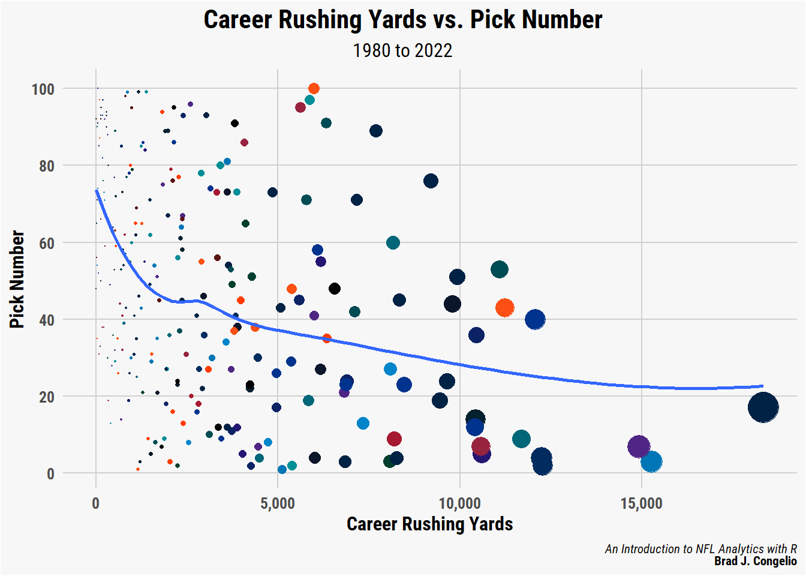
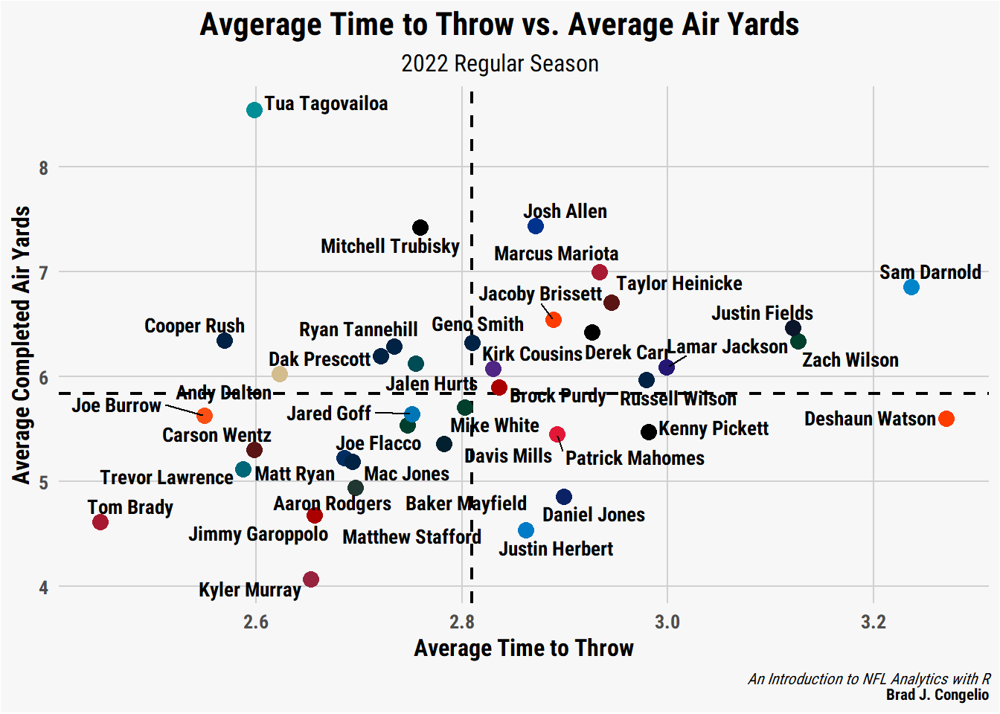
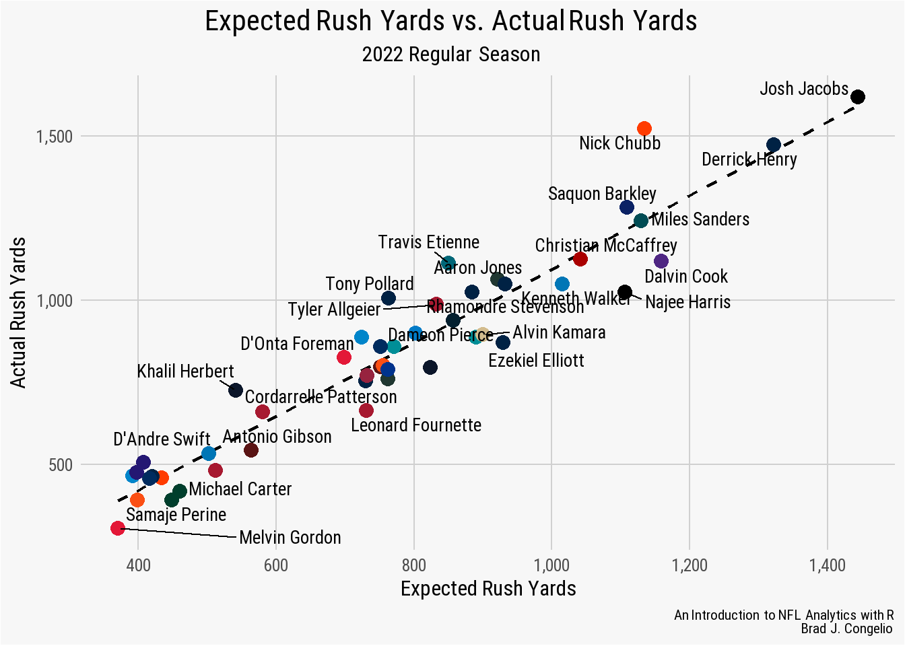
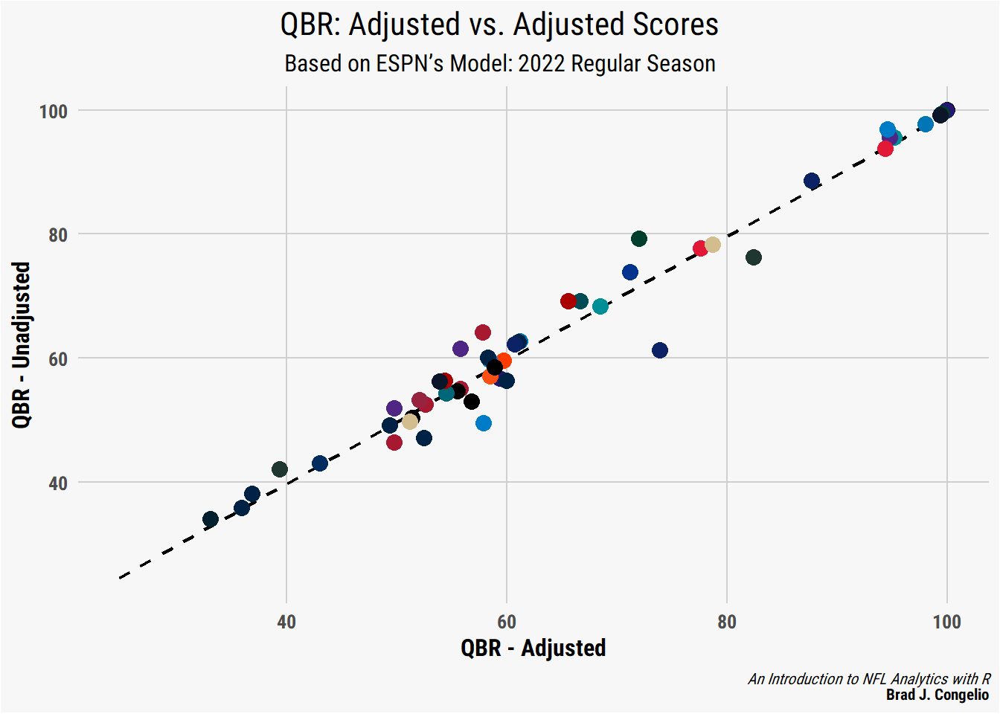
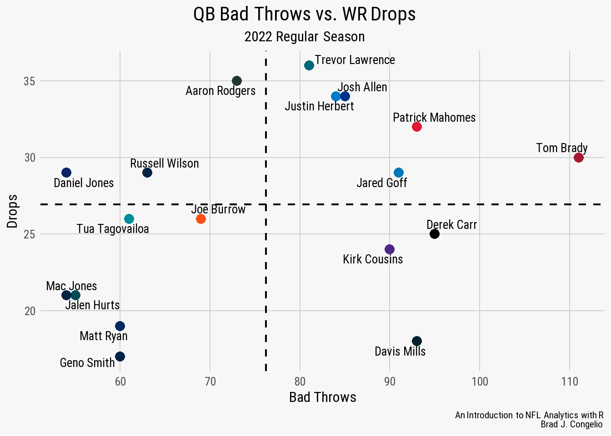
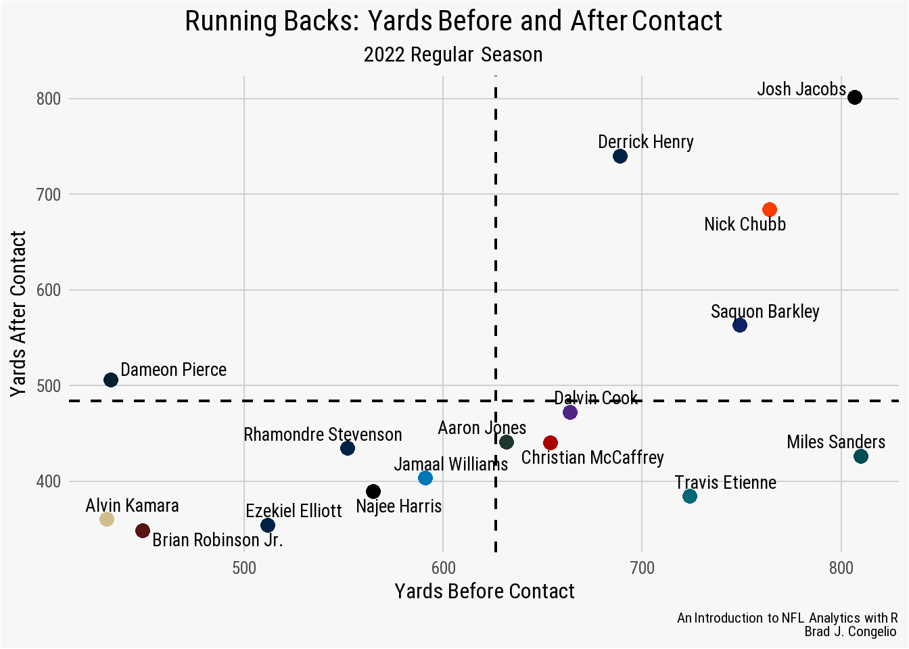
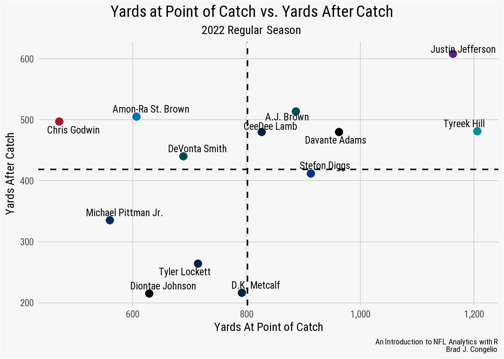
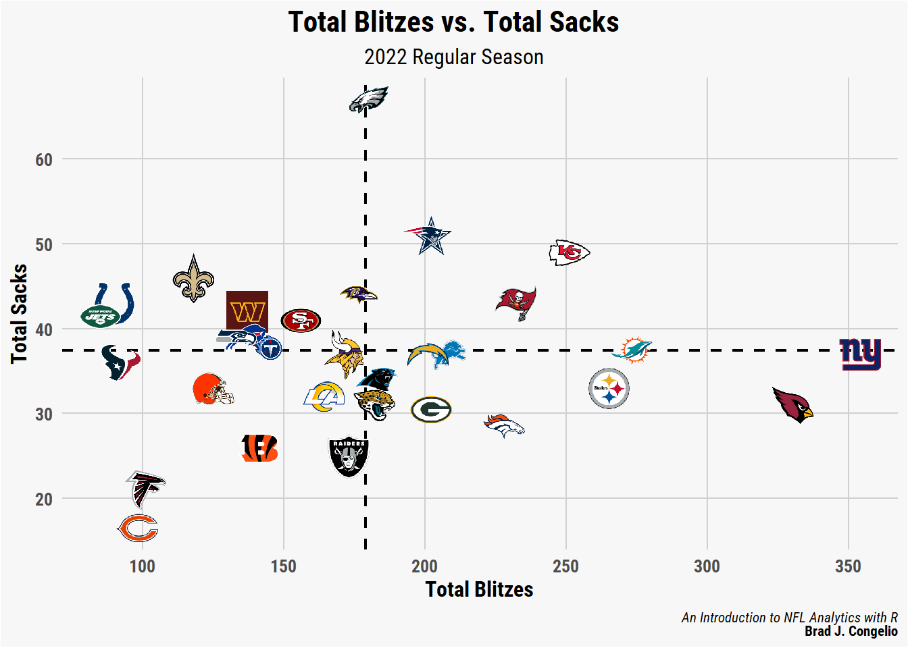
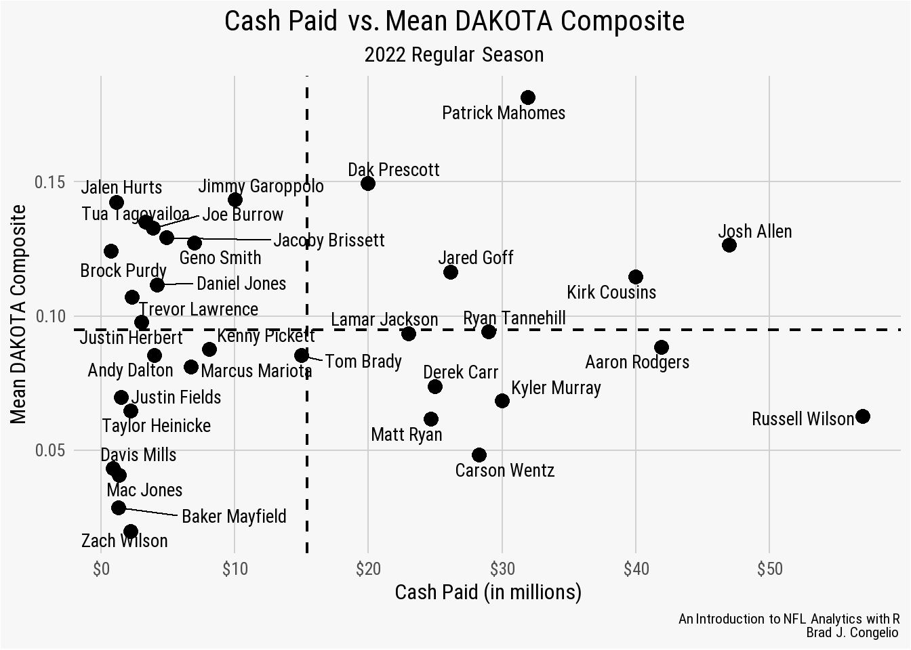
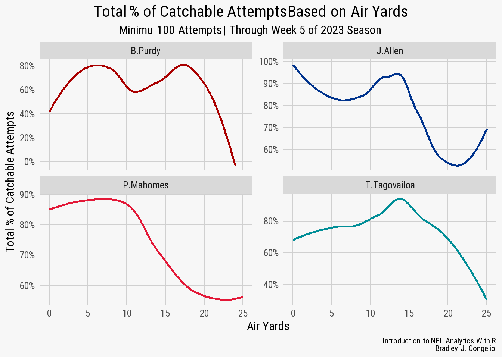

3 NFL Analytics with the nflverse Family of Packages
As mentioned in the Preface of this book, the nflverse has drastically expanded since the inception of nflfastR in April of 2020. In total, the current version of the nflverse is comprised of five separate R packages:
nflfastRnflseedRnfl4thnflreadrnflplotR
Installing the nflverse as a package in R will automatically install all five packages. However, the core focus of this book will be on nflreadr. It is understandable if you are confused by that, since the Preface of this book introduced the nflfastR package. The nflreadr package, as explained by its author (Tan Ho), is a “minimal package for downloading data from nflverse repositories.” The data that is the nflverse is stored across five different GitHub repositories. Using nflreadr allows for easy access to any of these data sources. For lack of a better term, nflreadr acts as a shortcut of sorts while also operating with less dependencies.
As you will see in this chapter, using nflreadr:: while coding provides nearly identical functions to those available when using nflfastR::. In fact, nflfastR::, in many instances, now calls, “under the hood,” the equivalent function in nflreadr::. Because of the coalescing between the two, many of the new functions being developed are available only when using nflreadr::. For example, nflreadr:: allows you to access data pertaining to the NFL Combine, draft picks, contracts, trades, injury information, and access to statistics on Pro Football Reference.
While nflfastR did initially serve as the foundation of the “amateur NFL analytics” movement, the nflreadr package has superseded it and now serves as the “catchall” package for all the various bits and pieces of the nflverse. Because of this, and to maintain consistency throughout, this book - nearly exclusively - will use nflreadr:: when calling functions housed within the nflverse rather than nflfastR::.
The below diagram visualizes the relationship between nflfastR and nflreadr.
The purpose of this chapter is to explore nflreadr data in an introductory fashion using, what I believe, are the two most important functions in the nflverse: (1.) load_player_stats() and (2.) load_pbp(). It makes the assumption that you are versed in the R programming language. If you are not, please start with Chapter 2 where you can learn about R and the tidyverse language using examples from the nflverse.
3.1 nflreadr: An Introduction to the Data
The most important part of the nflverse is, of course, the data. To begin, we will examine the core data that underpins the nflverse: weekly player stats and the more detailed play-by–play data. Using nflreadr, the end user is able to collect weekly top-level stats via the load_player_stats() function or the much more robust play-by-play numbers by using the load_pbp() function.
As you may imagine, there is a very important distinction between the load_player_stats() and load_pbp(). As mentioned, load_player_stats() will provide you with weekly, pre-calculated statistics for either offense or kicking. Conversely, load_pbp() will provide over 350 metrics for every single play of every single game dating back to 1999.
The load_player_stats() function includes the following offensive information:
offensive.stats <- nflreadr::load_player_stats(2021)
ls(offensive.stats) [1] "air_yards_share" "attempts"
[3] "carries" "completions"
[5] "dakota" "fantasy_points"
[7] "fantasy_points_ppr" "headshot_url"
[9] "interceptions" "pacr"
[11] "passing_2pt_conversions" "passing_air_yards"
[13] "passing_epa" "passing_first_downs"
[15] "passing_tds" "passing_yards"
[17] "passing_yards_after_catch" "player_display_name"
[19] "player_id" "player_name"
[21] "position" "position_group"
[23] "racr" "receiving_2pt_conversions"
[25] "receiving_air_yards" "receiving_epa"
[27] "receiving_first_downs" "receiving_fumbles"
[29] "receiving_fumbles_lost" "receiving_tds"
[31] "receiving_yards" "receiving_yards_after_catch"
[33] "recent_team" "receptions"
[35] "rushing_2pt_conversions" "rushing_epa"
[37] "rushing_first_downs" "rushing_fumbles"
[39] "rushing_fumbles_lost" "rushing_tds"
[41] "rushing_yards" "sack_fumbles"
[43] "sack_fumbles_lost" "sack_yards"
[45] "sacks" "season"
[47] "season_type" "special_teams_tds"
[49] "target_share" "targets"
[51] "week" "wopr" As well, switching the stat_type to “kicking” provides the following information:
kicking.stats <- nflreadr::load_player_stats(2021,
stat_type = "kicking")
ls(kicking.stats) [1] "fg_att" "fg_blocked" "fg_blocked_distance"
[4] "fg_blocked_list" "fg_long" "fg_made"
[7] "fg_made_0_19" "fg_made_20_29" "fg_made_30_39"
[10] "fg_made_40_49" "fg_made_50_59" "fg_made_60_"
[13] "fg_made_distance" "fg_made_list" "fg_missed"
[16] "fg_missed_0_19" "fg_missed_20_29" "fg_missed_30_39"
[19] "fg_missed_40_49" "fg_missed_50_59" "fg_missed_60_"
[22] "fg_missed_distance" "fg_missed_list" "fg_pct"
[25] "gwfg_att" "gwfg_blocked" "gwfg_distance"
[28] "gwfg_made" "gwfg_missed" "pat_att"
[31] "pat_blocked" "pat_made" "pat_missed"
[34] "pat_pct" "player_id" "player_name"
[37] "season" "season_type" "team"
[40] "week" While the data returned is not as rich as the play-by-play data we will covering next, the load_player_stats() function is extremely helpful when you need to quickly (and correctly!) recreate the official stats listed on either the NFL’s website or on Pro Football Reference.
As an example, let’s say you need to get Patrick Mahomes’ total passing yard and attempts from the 2022 season. You could do so via load_pbp() but, if you do not need further context (such as down, distance, quarter, etc.), using load_player_stats() is much more efficient.
3.1.1 Getting Player Stats via load_player_stats()
We can generate a data frame titled mahomes_pyards but running the following code:
mahomes_pyards <- nflreadr::load_player_stats(seasons = 2022)In the above example, we specified that the returned data be from the 2022 season. It needs to be noted that running load_player_stats() (without a specific season) will return the newest season in the data. Moreover, separating two seasons with a colon (:) will provide multiple seasons of data. In our working example, the mahomes_pyards data frame contains statistics for every player from every week of the 2022 season.
It is important to note that the structure of the data returned by load_player_stats() includes passing yards, rushing yards, receiving yards, etc. for each player. As a result, the data returns - for example - the week-by-week statistics for rushing and receiving for Peyton Manning, not just his passing numbers. Because of this, we can calculate Peyton’s rushing statistics from 2000 to 2022.
# A tibble: 1 x 4
carries rushing_yards rushing_tds rush_epa
<int> <dbl> <int> <dbl>
1 409 531 18 -0.740Knowing that Peyton’s average rushing EPA from 2000 to the end of his career was -0.740 is not going to win you final Jeopardy nor is it going to be helpful in any sort of Twitter football discourse (as opposed to knowing the rushing EPA for Patrick Mahomes who is, for lack of a better term, a bit more nimble on the run). When working with load_player_stats(), it is important that you know the variable names that are useful to the research you are doing.
Tip
The relevant passing statistics housed in load_player_stats() includes:
[1] "completions" "attempts"
[3] "passing_yards" "passing_tds"
[5] "interceptions" "sacks"
[7] "sack_yards" "sack_fumbles"
[9] "sack_fumbles_lost" "passing_air_yards"
[11] "passing_yards_after_catch" "passing_first_downs"
[13] "passing_epa" "passing_2pt_conversions"
[15] "pacr" "dakota" The columns relevant to rushing statistics in load_player_stats() are:
[1] "carries" "rushing_yards"
[3] "rushing_tds" "rushing_fumbles"
[5] "rushing_fumbles_lost" "rushing_first_downs"
[7] "rushing_epa" "rushing_2pt_conversions"Lastly, the columns for receiving statistics in load_player_stats() include:
[1] "receptions" "targets"
[3] "receiving_yards" "receiving_tds"
[5] "receiving_fumbles" "receiving_fumbles_lost"
[7] "receiving_air_yards" "receiving_yards_after_catch"
[9] "receiving_first_downs" "receiving_epa"
[11] "receiving_2pt_conversions" "racr"
[13] "target_share" "air_yards_share" Continuing with our above example working with load_player_stats() and Patrick Mahomes, we can find his total passing yards during the 2022 regular season by using the filter() function to sort the data for either player_name or player_display_name as well the the season_type and then use summarize() to get the total of his passing_yards over the course of the regular season.
mahomes_pyards <- mahomes_pyards %>%
filter(player_name == "P.Mahomes" & season_type == "REG") %>%
summarize(passing_yards = sum(passing_yards))
mahomes_pyards# A tibble: 1 x 1
passing_yards
<dbl>
1 5250The above code returns a result of 5,250 passing yards which is an exact match from the data provided by Pro Football Reference. In the above example, we used the filter() function on the player_name column in the data. You will get the same result if you replace that with player_display_name == "Patrick Mahomes". While there is no difference in how the data is collected, there will be a difference if you were to visualize the data frame and wished to display the player names along with their respective statistics. In most cases, in order to maintain a clean design, using the player_name option is best as it allows you to plot just the player’s first initial and last name.
We can build upon the passing yards example to replicate the vast majority of statistics found in the“Passing” data table for Mahomes from Pro Football Reference.
mahomes_pfr <- nflreadr::load_player_stats(seasons = 2022) %>%
filter(player_name == "P.Mahomes" & season_type == "REG") %>%
summarize(
completions = sum(completions),
attempts = sum(attempts),
cmp_pct = completions / attempts,
yards = sum(passing_yards),
touchdowns = sum(passing_tds),
td_pct = touchdowns / attempts * 100,
interceptions = sum(interceptions),
int_pct = interceptions / attempts * 100,
first_down = sum(passing_first_downs),
yards_attempt = yards / attempts,
adj_yards_attempt = (yards + 20 * touchdowns - 45 * interceptions) / attempts,
yards_completions = yards / completions,
yards_game = yards / 17,
sacks = sum(sacks),
sack_yards = sum(sack_yards),
sack_pct = sacks / (attempts + sacks) * 100)
mahomes_pfr# A tibble: 1 x 16
completions attempts cmp_pct yards touchdowns td_pct interceptions
<int> <int> <dbl> <dbl> <int> <dbl> <dbl>
1 435 648 0.671 5250 41 6.33 12
# i 9 more variables: int_pct <dbl>, first_down <dbl>,
# yards_attempt <dbl>, adj_yards_attempt <dbl>, ...What if we wanted to find Mahomes’ adjusted yards gained per pass attempt for every one of his seasons between 2018 and 2022? It is as simple as gathering all the data from years (seasons = 2018:2022), using the same filter() from above, and then using group_by() on the season variable.
mahomes_adjusted_yards <- nflreadr::load_player_stats(seasons = 2018:2022) %>%
filter(player_name == "P.Mahomes" & season_type == "REG") %>%
group_by(season) %>%
summarize(
adj_yards_attempt = (sum(passing_yards) + 20 *
sum(passing_tds) - 45 *
sum(interceptions)) / sum(attempts))
mahomes_adjusted_yards# A tibble: 5 x 2
season adj_yards_attempt
<int> <dbl>
1 2018 9.58
2 2019 8.94
3 2020 8.89
4 2021 7.59
5 2022 8.53Based on the data output, Mahomes’ best year for adjusted yards gained per pass attempt was 2018 with 9.58 adjusted yards. How does this compare to other quarterbacks from the same season? We can find the answer by doing slight modifications to our above code. Rather than filtering the information out to just Patrick Mahomes, we will add the player_name variable as the argument in the group_by() function.
all_qbs_adjusted <- nflreadr::load_player_stats(seasons = 2018) %>%
filter(season_type == "REG" & position == "QB") %>%
group_by(player_name) %>%
summarize(
adj_yards_attempt = (sum(passing_yards) + 20 *
sum(passing_tds) - 45 *
sum(interceptions)) / sum(attempts)) %>%
arrange(-adj_yards_attempt)
all_qbs_adjusted# A tibble: 73 x 2
player_name adj_yards_attempt
<chr> <dbl>
1 N.Sudfeld 21
2 G.Gilbert 13.3
3 M.Barkley 11.7
4 K.Allen 9.87
5 C.Henne 9.67
6 P.Mahomes 9.58
7 M.Glennon 9.24
8 D.Brees 9.01
9 R.Wilson 8.98
10 R.Fitzpatrick 8.80
# i 63 more rowsMahomes, with an adjusted yards per pass attempt of 9.58, finishes in sixth place in the 2018 season behind C. Henne (9.67), K. Allen (9.87), and then three others that have results between 10 and 20. This is a situation where I tell my students the results do not pass the “eye test.” Why? It is unlikely that an adjusted yards per pass attempt of 21 and 13.3 for Nate Sudfeld and Garrett Gilbert, respectively, are from a season worth of data. The results for Kyle Allen and Matt Barkley are questionable, as well.
Important
You will often discover artificially-inflated statistics like above when the players have limited number of pass attempts/rushing attempts/receptions/etc. compared to the other players on the list. To confirm this, we can add pass_attempts = sum(attempts) to the above code to compare the number of attempts Sudfeld and Gilbert had compared to the rest of the list.
all_qbs_adjusted_with_attempts <-
nflreadr::load_player_stats(seasons = 2018) %>%
filter(season_type == "REG" & position == "QB") %>%
group_by(player_name) %>%
summarize(
pass_attempts = sum(attempts),
adj_yards_attempt = (sum(passing_yards) + 20 *
sum(passing_tds) - 45 *
sum(interceptions)) / sum(attempts)) %>%
arrange(-adj_yards_attempt)
all_qbs_adjusted_with_attempts# A tibble: 73 x 3
player_name pass_attempts adj_yards_attempt
<chr> <int> <dbl>
1 N.Sudfeld 2 21
2 G.Gilbert 3 13.3
3 M.Barkley 25 11.7
4 K.Allen 31 9.87
5 C.Henne 3 9.67
6 P.Mahomes 580 9.58
7 M.Glennon 21 9.24
8 D.Brees 489 9.01
9 R.Wilson 427 8.98
10 R.Fitzpatrick 246 8.80
# i 63 more rowsThe results are even worse than initially thought. There are a total of six players with an inflated adjusted yards per pass attempt:
- Nate Sudfeld (2 attempts, 21 adjusted yards).
- Garrett Gilbert (3 attempts, 13.3 adjusted yards).
- Matt Barkley (25 attempts, 11.7 adjusted yards).
- Kyle Allen (31 attempts, 9.87 adjusted yards).
- Chris Henne (3 attempts, 9.67 adjusted yards).
To remove those players with inflated statistics resulting from a lack of attempts, we can apply a second filter() at the end of our above code to limit the results to just those quarterbacks with no less than 100 pass attempts in the 2018 season.
all_qbs_attempts_100 <-
nflreadr::load_player_stats(seasons = 2018) %>%
filter(season_type == "REG" & position == "QB") %>%
group_by(player_name) %>%
summarize(
pass_attempts = sum(attempts),
adj_yards_attempt = (sum(passing_yards) + 20 *
sum(passing_tds) - 45 *
sum(interceptions)) / sum(attempts)) %>%
filter(pass_attempts >= 100) %>%
arrange(-adj_yards_attempt)
all_qbs_attempts_100After including a filter() to the code to remove those quarterbacks with less than 100 attempts, it is clear that Mahomes has the best adjusted pass yards per attempt (9.58) in the 2018 season with Drew Brees in second place with 9.01. Based on our previous examples, we know that a Mahomes 9.58 adjusted pass yards per attempt in 2018 was his career high (and is also the highest in the 2018 season). How do his other seasons stack up? Is his lowest adjusted pass yards (7.59) in 2021 still the best among NFL quarterbacks in that specific season?
To find the answer, we can make slight adjustments to our existing code.
best_adjusted_yards <-
nflreadr::load_player_stats(seasons = 2018:2022) %>%
filter(season_type == "REG" & position == "QB") %>%
group_by(season, player_name) %>%
summarize(
pass_attempts = sum(attempts),
adj_yards_attempt = (sum(passing_yards) + 20 *
sum(passing_tds) - 45 *
sum(interceptions)) / sum(attempts)) %>%
filter(pass_attempts >= 100) %>%
ungroup() %>%
group_by(season) %>%
filter(adj_yards_attempt == max(adj_yards_attempt))
best_adjusted_yards# A tibble: 5 x 4
# Groups: season [5]
season player_name pass_attempts adj_yards_attempt
<int> <chr> <int> <dbl>
1 2018 P.Mahomes 580 9.58
2 2019 R.Tannehill 286 10.2
3 2020 A.Rodgers 526 9.57
4 2021 J.Burrow 520 8.96
5 2022 T.Tagovailoa 400 9.22To get the answer, we’ve created code that follows along with our prior examples. However, after using filter() to limit the number of attempts each quarterback must have, we use ungroup() to remove the previous grouping between season and player_name and then use group_by() again on just the season information in the data. After, we use filter() to select just the highest adjusted yards per attempt for each individual season. As a result, we can see that Mahomes only led the NFL in this specific metric in the 2018 season. In fact, between the 2018 and 2022 seasons, Ryan Tannehill had the highest adjusted yards per attempt with 10.2 (but notice he had just 286 passing attempts).
As mentioned, the load_player_stats() information is provided on a week-by-week basis. In our above example, we are aggregating all regular season weeks into a season-long metric. Given the structure of the data, we can take a similar approach but to determine the leaders on a week-by-week basis. To showcase this, we can determine the leader in rushing EPA for every week during the 2022 regular season.
rushing_epa_leader <- nflreadr::load_player_stats(season = 2022) %>%
filter(season_type == "REG" & position == "RB") %>%
filter(!is.na(rushing_epa)) %>%
group_by(week, player_name) %>%
summarize(
carries = carries,
rush_epa = rushing_epa) %>%
filter(carries >= 10) %>%
ungroup() %>%
group_by(week) %>%
filter(rush_epa == max(rush_epa))# A tibble: 18 x 4
# Groups: week [18]
week player_name carries rush_epa
<int> <chr> <int> <dbl>
1 1 D.Swift 15 10.0
2 2 A.Jones 15 8.08
3 3 C.Patterson 17 5.76
4 4 R.Penny 17 9.73
5 5 A.Ekeler 16 11.6
6 6 K.Drake 10 6.72
7 7 J.Jacobs 20 6.93
8 8 T.Etienne 24 9.68
9 9 J.Mixon 22 11.3
10 10 A.Jones 24 5.47
11 11 J.Cook 11 2.92
12 12 M.Sanders 21 6.72
13 13 T.Pollard 12 3.97
14 14 M.Sanders 17 8.95
15 15 T.Allgeier 17 10.5
16 16 D.Foreman 21 7.22
17 17 A.Ekeler 10 10.0
18 18 A.Mattison 10 5.85Rather than using the season variable in the group_by() function, we instead use week to calculate the leader in rushing EPA. The results show that the weekly leader is varied, with only Austin Ekeler and Aaron Jones appearing on the list more than once. The Bengals’ Joe Mixon produced the largest rushing EPA in the 2022 season, recording 11.3 in week 9 while James Cook’s 2.92 output in week 11 was the “least” of the best weekly performances.
Much like we did with the passing statistics, we can use the rushing data in load_player_stats() to replicate the majority found on Pro Football Reference. To do so, let’s use Joe Mixon’s week 9 performance from the 2022 season.
mixon_week_9 <- nflreadr::load_player_stats(seasons = 2022) %>%
filter(player_name == "J.Mixon" & week == 9) %>%
summarize(
rushes = sum(carries),
yards = sum(rushing_yards),
yards_att = yards / rushes,
tds = sum(rushing_tds),
first_down = sum(rushing_first_downs))
mixon_week_9# A tibble: 1 x 5
rushes yards yards_att tds first_down
<int> <dbl> <dbl> <int> <dbl>
1 22 153 6.95 4 12Mixon gained a total of 153 yards on the ground on 22 carries, which is just under 7 yards per attempt. Four of those carries resulting in touchdowns, while 12 of them kept drives alive with first downs. Other contextual statistics for this performance, such as yards after contact, are not included in load_player_stats() but can be retrieved using other functions within the nflverse() (which are covered later in this chapter).
Finally, we can use the load_player_stats() function to explore wide receiver performances. As listed above, the wide receivers statistics housed within load_player_stats() include those to be expected: yards, touchdowns, air yards, yards after catch, etc. Rather than working with those in an example, let’s use wopr which stands for Weighted Opportunity Rating, which is a weighted average that contextualizes how much value any one wide receivers bring to a fantasy football team. The equation is already built into the data, but for clarity it is as follows:
\[ 1.5 * target share + 0.7 * air yards share \]
We can use wopr to determine which wide receiver was the most valuable to fantasy football owners during the 2022 season.
receivers_wopr <- nflreadr::load_player_stats(seasons = 2022) %>%
filter(season_type == "REG" & position == "WR") %>%
group_by(player_name) %>%
summarize(
total_wopr = sum(wopr)) %>%
arrange(-total_wopr)
receivers_wopr# A tibble: 225 x 2
player_name total_wopr
<chr> <dbl>
1 D.Moore 13.9
2 D.Adams 13.4
3 T.Hill 12.4
4 A.Brown 12.2
5 J.Jefferson 11.9
6 C.Lamb 11.8
7 A.Cooper 11.8
8 D.Johnson 11.2
9 D.London 10.9
10 D.Metcalf 10.7
# i 215 more rowsD.J. Moore led the NFL in the 2022 season with a 13.9 Weighted Opportunity Rating, followed closely by Davante Adams with 13.4. However, before deciding that D.J. Moore is worth the number one pick in your upcoming fantasy football draft, it is worth exploring if there is a relationship between a high Weight Opportunity Rating and a player’s total fantasy points. To do so, we can take our above code that was used to gather each player’s WOPR over the course of the season and add total_ff = sum(fantasy_points) and also calculate a new metric called “Fantasy Points per Weighted Opportunity” which is simply the total of a player’s points divided by the wopr.
receivers_wopr_ff_context <-
nflreadr::load_player_stats(seasons = 2022) %>%
filter(season_type == "REG" & position == "WR") %>%
group_by(player_name) %>%
summarize(
total_wopr = sum(wopr),
total_ff = sum(fantasy_points),
ff_per_wopr = total_ff / total_wopr) %>%
arrange(-total_wopr)
receivers_wopr_ff_context# A tibble: 225 x 4
player_name total_wopr total_ff ff_per_wopr
<chr> <dbl> <dbl> <dbl>
1 D.Moore 13.9 136. 9.76
2 D.Adams 13.4 236. 17.6
3 T.Hill 12.4 222. 17.9
4 A.Brown 12.2 212. 17.4
5 J.Jefferson 11.9 241. 20.3
6 C.Lamb 11.8 195. 16.5
7 A.Cooper 11.8 168 14.2
8 D.Johnson 11.2 94.7 8.48
9 D.London 10.9 107. 9.77
10 D.Metcalf 10.7 137. 12.7
# i 215 more rowsThere are several insights evident in the results. Of the top wopr earners in the 2022 season. only Diontae Johnson scored fewer fantasy points than D.J. Moore (94.7 to 136). Given the relationship between total_wopr and total_ff, a lower ff_per_wopr is indicative of less stellar play. In this case, Moore maintained a large amount of both the team’s target_share and air_yards_share, but was not able to translate that into a higher amount of fantasy points (as evidenced by a lower ff_per_wopr score). On the other hand, Justin Jefferson’s ff_per_wopr score of 20.3 argues that he used his amount of target_share and air_yards_share to increase the amount of fantasy points he produced.
Based on the above examples, it is clear that the load_player_stats() function is useful when needing to aggregate statistics on a weekly or season-long basis. While this does allow for easy matching of official statistics, it does not provide the ability to add context to the findings. For example, we know that Patrick Mahomes had the highest adjusted pass yards per attempt during the 2018 regular season with 9.58. But, what if we wanted to explore that same metric but only on passes that took place on 3rd down with 10 or less yards to go?
Unfortunately, the load_player_stats() function does not provide ability to distill the statistics into specific situations. Because of this, we must turn to the load_pbp() function.
3.2 Using load_pbp() to Add Context to Statistics
Using the load_pbp() function is preferable when you are looking to add context to a player’s statistics, as the load_player_stats() function is, for all intents and purposes, aggregated statistics that limit your ability to find deeper meaning.
The load_pbp() function provides over 350 various metrics, as listed below:
[1] "aborted_play"
[2] "air_epa"
[3] "air_wpa"
[4] "air_yards"
[5] "assist_tackle"
[6] "assist_tackle_1_player_id"
[7] "assist_tackle_1_player_name"
[8] "assist_tackle_1_team"
[9] "assist_tackle_2_player_id"
[10] "assist_tackle_2_player_name"
[11] "assist_tackle_2_team"
[12] "assist_tackle_3_player_id"
[13] "assist_tackle_3_player_name"
[14] "assist_tackle_3_team"
[15] "assist_tackle_4_player_id"
[16] "assist_tackle_4_player_name"
[17] "assist_tackle_4_team"
[18] "away_coach"
[19] "away_score"
[20] "away_team"
[21] "away_timeouts_remaining"
[22] "away_wp"
[23] "away_wp_post"
[24] "blocked_player_id"
[25] "blocked_player_name"
[26] "comp_air_epa"
[27] "comp_air_wpa"
[28] "comp_yac_epa"
[29] "comp_yac_wpa"
[30] "complete_pass"
[31] "cp"
[32] "cpoe"
[33] "def_wp"
[34] "defensive_extra_point_attempt"
[35] "defensive_extra_point_conv"
[36] "defensive_two_point_attempt"
[37] "defensive_two_point_conv"
[38] "defteam"
[39] "defteam_score"
[40] "defteam_score_post"
[41] "defteam_timeouts_remaining"
[42] "desc"
[43] "div_game"
[44] "down"
[45] "drive"
[46] "drive_end_transition"
[47] "drive_end_yard_line"
[48] "drive_ended_with_score"
[49] "drive_first_downs"
[50] "drive_game_clock_end"
[51] "drive_game_clock_start"
[52] "drive_inside20"
[53] "drive_play_count"
[54] "drive_play_id_ended"
[55] "drive_play_id_started"
[56] "drive_quarter_end"
[57] "drive_quarter_start"
[58] "drive_real_start_time"
[59] "drive_start_transition"
[60] "drive_start_yard_line"
[61] "drive_time_of_possession"
[62] "drive_yards_penalized"
[63] "end_clock_time"
[64] "end_yard_line"
[65] "ep"
[66] "epa"
[67] "extra_point_attempt"
[68] "extra_point_prob"
[69] "extra_point_result"
[70] "fantasy"
[71] "fantasy_id"
[72] "fantasy_player_id"
[73] "fantasy_player_name"
[74] "fg_prob"
[75] "field_goal_attempt"
[76] "field_goal_result"
[77] "first_down"
[78] "first_down_pass"
[79] "first_down_penalty"
[80] "first_down_rush"
[81] "fixed_drive"
[82] "fixed_drive_result"
[83] "forced_fumble_player_1_player_id"
[84] "forced_fumble_player_1_player_name"
[85] "forced_fumble_player_1_team"
[86] "forced_fumble_player_2_player_id"
[87] "forced_fumble_player_2_player_name"
[88] "forced_fumble_player_2_team"
[89] "fourth_down_converted"
[90] "fourth_down_failed"
[91] "fumble"
[92] "fumble_forced"
[93] "fumble_lost"
[94] "fumble_not_forced"
[95] "fumble_out_of_bounds"
[96] "fumble_recovery_1_player_id"
[97] "fumble_recovery_1_player_name"
[98] "fumble_recovery_1_team"
[99] "fumble_recovery_1_yards"
[100] "fumble_recovery_2_player_id"
[101] "fumble_recovery_2_player_name"
[102] "fumble_recovery_2_team"
[103] "fumble_recovery_2_yards"
[104] "fumbled_1_player_id"
[105] "fumbled_1_player_name"
[106] "fumbled_1_team"
[107] "fumbled_2_player_id"
[108] "fumbled_2_player_name"
[109] "fumbled_2_team"
[110] "game_date"
[111] "game_half"
[112] "game_id"
[113] "game_seconds_remaining"
[114] "game_stadium"
[115] "goal_to_go"
[116] "half_sack_1_player_id"
[117] "half_sack_1_player_name"
[118] "half_sack_2_player_id"
[119] "half_sack_2_player_name"
[120] "half_seconds_remaining"
[121] "home_coach"
[122] "home_opening_kickoff"
[123] "home_score"
[124] "home_team"
[125] "home_timeouts_remaining"
[126] "home_wp"
[127] "home_wp_post"
[128] "id"
[129] "incomplete_pass"
[130] "interception"
[131] "interception_player_id"
[132] "interception_player_name"
[133] "jersey_number"
[134] "kick_distance"
[135] "kicker_player_id"
[136] "kicker_player_name"
[137] "kickoff_attempt"
[138] "kickoff_downed"
[139] "kickoff_fair_catch"
[140] "kickoff_in_endzone"
[141] "kickoff_inside_twenty"
[142] "kickoff_out_of_bounds"
[143] "kickoff_returner_player_id"
[144] "kickoff_returner_player_name"
[145] "lateral_interception_player_id"
[146] "lateral_interception_player_name"
[147] "lateral_kickoff_returner_player_id"
[148] "lateral_kickoff_returner_player_name"
[149] "lateral_punt_returner_player_id"
[150] "lateral_punt_returner_player_name"
[151] "lateral_receiver_player_id"
[152] "lateral_receiver_player_name"
[153] "lateral_receiving_yards"
[154] "lateral_reception"
[155] "lateral_recovery"
[156] "lateral_return"
[157] "lateral_rush"
[158] "lateral_rusher_player_id"
[159] "lateral_rusher_player_name"
[160] "lateral_rushing_yards"
[161] "lateral_sack_player_id"
[162] "lateral_sack_player_name"
[163] "location"
[164] "name"
[165] "nfl_api_id"
[166] "no_huddle"
[167] "no_score_prob"
[168] "old_game_id"
[169] "opp_fg_prob"
[170] "opp_safety_prob"
[171] "opp_td_prob"
[172] "order_sequence"
[173] "out_of_bounds"
[174] "own_kickoff_recovery"
[175] "own_kickoff_recovery_player_id"
[176] "own_kickoff_recovery_player_name"
[177] "own_kickoff_recovery_td"
[178] "pass"
[179] "pass_attempt"
[180] "pass_defense_1_player_id"
[181] "pass_defense_1_player_name"
[182] "pass_defense_2_player_id"
[183] "pass_defense_2_player_name"
[184] "pass_length"
[185] "pass_location"
[186] "pass_oe"
[187] "pass_touchdown"
[188] "passer"
[189] "passer_id"
[190] "passer_jersey_number"
[191] "passer_player_id"
[192] "passer_player_name"
[193] "passing_yards"
[194] "penalty"
[195] "penalty_player_id"
[196] "penalty_player_name"
[197] "penalty_team"
[198] "penalty_type"
[199] "penalty_yards"
[200] "play"
[201] "play_clock"
[202] "play_deleted"
[203] "play_id"
[204] "play_type"
[205] "play_type_nfl"
[206] "posteam"
[207] "posteam_score"
[208] "posteam_score_post"
[209] "posteam_timeouts_remaining"
[210] "posteam_type"
[211] "punt_attempt"
[212] "punt_blocked"
[213] "punt_downed"
[214] "punt_fair_catch"
[215] "punt_in_endzone"
[216] "punt_inside_twenty"
[217] "punt_out_of_bounds"
[218] "punt_returner_player_id"
[219] "punt_returner_player_name"
[220] "punter_player_id"
[221] "punter_player_name"
[222] "qb_dropback"
[223] "qb_epa"
[224] "qb_hit"
[225] "qb_hit_1_player_id"
[226] "qb_hit_1_player_name"
[227] "qb_hit_2_player_id"
[228] "qb_hit_2_player_name"
[229] "qb_kneel"
[230] "qb_scramble"
[231] "qb_spike"
[232] "qtr"
[233] "quarter_end"
[234] "quarter_seconds_remaining"
[235] "receiver"
[236] "receiver_id"
[237] "receiver_jersey_number"
[238] "receiver_player_id"
[239] "receiver_player_name"
[240] "receiving_yards"
[241] "replay_or_challenge"
[242] "replay_or_challenge_result"
[243] "result"
[244] "return_team"
[245] "return_touchdown"
[246] "return_yards"
[247] "roof"
[248] "run_gap"
[249] "run_location"
[250] "rush"
[251] "rush_attempt"
[252] "rush_touchdown"
[253] "rusher"
[254] "rusher_id"
[255] "rusher_jersey_number"
[256] "rusher_player_id"
[257] "rusher_player_name"
[258] "rushing_yards"
[259] "sack"
[260] "sack_player_id"
[261] "sack_player_name"
[262] "safety"
[263] "safety_player_id"
[264] "safety_player_name"
[265] "safety_prob"
[266] "score_differential"
[267] "score_differential_post"
[268] "season"
[269] "season_type"
[270] "series"
[271] "series_result"
[272] "series_success"
[273] "shotgun"
[274] "side_of_field"
[275] "solo_tackle"
[276] "solo_tackle_1_player_id"
[277] "solo_tackle_1_player_name"
[278] "solo_tackle_1_team"
[279] "solo_tackle_2_player_id"
[280] "solo_tackle_2_player_name"
[281] "solo_tackle_2_team"
[282] "sp"
[283] "special"
[284] "special_teams_play"
[285] "spread_line"
[286] "st_play_type"
[287] "stadium"
[288] "stadium_id"
[289] "start_time"
[290] "success"
[291] "surface"
[292] "tackle_for_loss_1_player_id"
[293] "tackle_for_loss_1_player_name"
[294] "tackle_for_loss_2_player_id"
[295] "tackle_for_loss_2_player_name"
[296] "tackle_with_assist"
[297] "tackle_with_assist_1_player_id"
[298] "tackle_with_assist_1_player_name"
[299] "tackle_with_assist_1_team"
[300] "tackle_with_assist_2_player_id"
[301] "tackle_with_assist_2_player_name"
[302] "tackle_with_assist_2_team"
[303] "tackled_for_loss"
[304] "td_player_id"
[305] "td_player_name"
[306] "td_prob"
[307] "td_team"
[308] "temp"
[309] "third_down_converted"
[310] "third_down_failed"
[311] "time"
[312] "time_of_day"
[313] "timeout"
[314] "timeout_team"
[315] "total"
[316] "total_away_comp_air_epa"
[317] "total_away_comp_air_wpa"
[318] "total_away_comp_yac_epa"
[319] "total_away_comp_yac_wpa"
[320] "total_away_epa"
[321] "total_away_pass_epa"
[322] "total_away_pass_wpa"
[323] "total_away_raw_air_epa"
[324] "total_away_raw_air_wpa"
[325] "total_away_raw_yac_epa"
[326] "total_away_raw_yac_wpa"
[327] "total_away_rush_epa"
[328] "total_away_rush_wpa"
[329] "total_away_score"
[330] "total_home_comp_air_epa"
[331] "total_home_comp_air_wpa"
[332] "total_home_comp_yac_epa"
[333] "total_home_comp_yac_wpa"
[334] "total_home_epa"
[335] "total_home_pass_epa"
[336] "total_home_pass_wpa"
[337] "total_home_raw_air_epa"
[338] "total_home_raw_air_wpa"
[339] "total_home_raw_yac_epa"
[340] "total_home_raw_yac_wpa"
[341] "total_home_rush_epa"
[342] "total_home_rush_wpa"
[343] "total_home_score"
[344] "total_line"
[345] "touchback"
[346] "touchdown"
[347] "two_point_attempt"
[348] "two_point_conv_result"
[349] "two_point_conversion_prob"
[350] "vegas_home_wp"
[351] "vegas_home_wpa"
[352] "vegas_wp"
[353] "vegas_wpa"
[354] "weather"
[355] "week"
[356] "wind"
[357] "wp"
[358] "wpa"
[359] "xpass"
[360] "xyac_epa"
[361] "xyac_fd"
[362] "xyac_mean_yardage"
[363] "xyac_median_yardage"
[364] "xyac_success"
[365] "yac_epa"
[366] "yac_wpa"
[367] "yardline_100"
[368] "yards_after_catch"
[369] "yards_gained"
[370] "ydsnet"
[371] "ydstogo"
[372] "yrdln" The amount of information contained in the nflverse play-by-play data can be overwhelming. Luckily, the nflreadr website includes a searchable directory of all the variables with a brief description of what each one means. You can visit that here: nflreadr Field Descriptions.
We can recreate our examination of 2018 adjusted pass yards per attempt to just those passes on 3rd down with 10 or less yards to go by running the following code:
pbp <- nflreadr::load_pbp(2018) %>%
filter(season_type == "REG")
adjusted_yards <- pbp %>%
group_by(passer_player_name) %>%
filter(down == 3 & ydstogo <= 10) %>%
filter(complete_pass == 1 | incomplete_pass == 1 |
interception == 1 &
!is.na(down)) %>%
summarize(
total_attempts = n(),
adj_yards = (sum(yards_gained) + 20 * sum(touchdown == 1) - 45 *
sum(interception == 1)) / total_attempts) %>%
filter(total_attempts >= 50) %>%
arrange(-adj_yards)
adjusted_yards# A tibble: 32 x 3
passer_player_name total_attempts adj_yards
<chr> <int> <dbl>
1 A.Rodgers 98 11.3
2 P.Mahomes 102 10.3
3 R.Wilson 104 10.3
4 E.Manning 119 9.18
5 M.Mariota 79 8.43
6 M.Ryan 117 8.26
7 J.Winston 66 8.05
8 D.Brees 97 7.99
9 D.Prescott 104 7.87
10 J.Flacco 74 7.84
# i 22 more rowsBecause the load_pbp() data is not pre-aggregated, we must do a bit of the work ourselves before we are able to achieve our answer. To start, we load the 2018 play-by-play data into a data frame titled pbp but using the load_pbp() function with the season argument set to “2018.” As well, we use the filter() function to make sure the data gathered into our pbp data frame is only the regular season statistics. Once the play-by-play is loaded, we create a data frame off of it titled adjusted_yards wherein we use group_by() to calculate the metric for each individual quarterback, then ensure that we are collecting the play-by-play data for only those plays that took place on 3rd down with ten or less yards to go.
We then use a second filter() to gather those plays where complete_pass == 1 or incomplete_pass == 1 or interception == 1 and the down is not missing (which usually indicates a 2-point conversion attempt). As a result, each quarterback has an exact match to the number of complete passes, attempts, and interceptions as found in the official statistics of the season.
Despite leading the league in adjusted pass yard per attempt in 2018, Mahomes finished a whole yard behind Aaron Rodgers when exploring the same metric on 3rd down with 10 or less yards to go (and was tied for second place with Russel Wilson).
Tip
Why is it necessary to use such a long list of specifications in the filter() function in order to match the official QB statistics found elsewhere?
That is a good question, especially since there are other variables within the play-by-play data that would seemingly return the correct results (such as pass == 1 or play_type == "pass". We can view the differences in all three methods by doing the following.
pbp <- nflreadr::load_pbp(2018) %>%
filter(season_type == "REG")
pbp %>%
filter(complete_pass == 1 | incomplete_pass == 1 |
interception == 1 &
!is.na(down)) %>%
filter(passer_player_name == "P.Mahomes") %>%
summarize(total_attempts = n())# A tibble: 1 x 1
total_attempts
<int>
1 580pass_numbers <- pbp %>%
filter(passer_player_name == "P.Mahomes") %>%
summarize(
using_pass = sum(pass == 1, na.rm = TRUE),
using_playtype = sum(play_type == "pass"),
using_filter = 580)
pass_numbers# A tibble: 1 x 3
using_pass using_playtype using_filter
<int> <int> <dbl>
1 606 606 580We know that Patrick Mahomes attempted 580 passes during the 2022 regular season. We can match that number exactly using the filter() method for complete_pass, incomplete_pass, interception, and removing plays with a missing down observation. When trying to replicate this number using either the pass == 1 variable in the play-by-play data or play_type == "pass", we get just over 20 more passes than expected.
The main reason for this is the inclusion of the qb_spike, qb_scramble, and sack variables. We can actually use the code above that was used to create the pass_numbers data frame, add an additional filter() to account for these, and get the correct number of passing attempts for each method.
pass_numbers_correct <- pbp %>%
filter(passer_player_name == "P.Mahomes") %>%
filter(qb_spike == 0 & qb_scramble == 0 & sack == 0) %>%
summarize(
using_pass = sum(pass == 1, na.rm = TRUE),
using_playtype = sum(play_type == "pass"),
using_filter = 580)
pass_numbers_correct# A tibble: 1 x 3
using_pass using_playtype using_filter
<int> <int> <dbl>
1 580 580 580By using filter() to remove any play that included a QB spike, a QB scramble, or a sack, we get 580 attempts when using both pass == 1 and play_type == "pass" which replicates the official statistics from the 2018 season for Patrick Mahomes.
What about the use of passer vs. passer_player_name?
It is also important to remember that you will receive differing numbers based on your use of passer and passer_player_name. The passer variable is created internally by the nflverse system and is used to “mimic” the statistics without spikes, scrambles, or sacks in the data. The passer_player_name variable comes from the official statistics and inherently includes this information.
The following, with the first method using group_by(passer) and the second using group_by(passer_player_name) returns differing results.
passer_grouping <- pbp %>%
filter(complete_pass == 1 |
incomplete_pass == 1 |
interception == 1 & !is.na(down)) %>%
group_by(passer) %>%
summarize(total_attempts = n()) %>%
arrange(-total_attempts) %>%
slice(1:5)
passer_player_grouping <- pbp %>%
filter(complete_pass == 1 |
incomplete_pass == 1 |
interception == 1 & !is.na(down)) %>%
group_by(passer_player_name) %>%
summarize(total_attempts = n()) %>%
arrange(-total_attempts) %>%
slice(1:5)
passer_grouping# A tibble: 5 x 2
passer total_attempts
<chr> <int>
1 B.Roethlisberger 672
2 A.Luck 637
3 M.Ryan 607
4 K.Cousins 603
5 A.Rodgers 595passer_player_grouping# A tibble: 5 x 2
passer_player_name total_attempts
<chr> <int>
1 B.Roethlisberger 675
2 A.Luck 639
3 M.Ryan 608
4 K.Cousins 606
5 A.Rodgers 597When grouping by passer, we get a total attempts of 672 for Ben Roethlisberger. That number increases to 675 when grouping by passer_player_name. Again, this is because the passer variable is created by the nflverse and automatically removes spikes, scrambles, and sacks while passer_player_name includes all three.
We can run the following code to determine where the difference of three passing attempts is coming from between passer and passer_player_name.
roethlisberger_difference <- pbp %>%
filter(complete_pass == 1 |
incomplete_pass == 1 |
interception == 1 & !is.na(down)) %>%
group_by(passer_player_name) %>%
summarize(total_attempts = n(),
spikes = sum(qb_spike == 1),
scramble = sum(qb_scramble == 1),
sacks = sum(sack == 1)) %>%
arrange(-total_attempts) %>%
slice(1:5)
roethlisberger_difference# A tibble: 5 x 5
passer_player_name total_attempts spikes scramble sacks
<chr> <int> <int> <int> <int>
1 B.Roethlisberger 675 3 0 0
2 A.Luck 639 2 0 0
3 M.Ryan 608 1 0 0
4 K.Cousins 606 3 0 0
5 A.Rodgers 597 2 0 0In the case of Roethlisberger, the three pass attempt difference was the result of the passer_player_name grouping including three QB spikes in the data. Aside from when attempting to replicate the official statistics, it is better to use just passer as it removes those instances where a QB spike, scramble, or sack my skew the results of your data.
To continue working with load_pbp() data, let’s create a metric that examines a QB’s aggressiveness on 3rd down passing attempts. The metric is designed to determine which QBs in the NFL are most aggressive in 3rd down situations by gauging how often they throw the ball to, or pass, the first down line. It is an interesting metric to explore as, just like many metrics in the NFL, not all air yards are created equal. For example, eight air yards on 1st and 10 are less valuable than the same eight air yards on 3rd and 5.
pbp <- nflreadr::load_pbp(2022)
aggressiveness <- pbp %>%
filter(complete_pass == 1 |
incomplete_pass == 1 |
interception == 1 &
!is.na(down)) %>%
filter(down == 3 & ydstogo >= 5 & ydstogo <= 10) %>%
group_by(passer) %>%
summarize(
team = last(posteam),
total = n(),
aggressive = sum(air_yards >= ydstogo, na.rm = TRUE),
percentage = aggressive / total) %>%
filter(total >= 50) %>%
arrange(-percentage) %>%
slice(1:10)
aggressiveness# A tibble: 10 x 5
passer team total aggressive percentage
<chr> <chr> <int> <int> <dbl>
1 P.Mahomes KC 75 55 0.733
2 K.Pickett PIT 54 36 0.667
3 M.Jones NE 56 36 0.643
4 D.Carr LV 74 47 0.635
5 R.Wilson DEN 63 40 0.635
6 G.Smith SEA 65 41 0.631
7 A.Dalton NO 55 34 0.618
8 J.Hurts PHI 65 40 0.615
9 K.Cousins MIN 84 51 0.607
10 J.Allen BUF 61 35 0.574Following our above example, we use filter() on the play-by-play data to calculate the total number of attempts for each quarterback on 3rd down when there were between 5 and 10 yards to go for a first down. Because we want to make sure we are not gathering attempts with spikes, scrambles, etc., we use passer in the group_by() function and then calculate the total attempts for each quarterback. After, we find the total number of times each quarterback was aggressive by finding the sum of attempts where the air_yards of the pass were greater than or equal to the required ydstogo. The two numbers are then divided (aggressive / total) to get each quarterback’s percentage.
As you can see in the output of aggressiveness, Mahomes was the most aggressive quarterback in 3rd down passing situation in the 2022 season, passing to, or beyond, the line of gain just over 73% of the time.
One item to consider, however, is the concept of “garbage time.” Are the above results, perhaps, skewed by including quarterbacks that were forced to work the ball downfield while attempting a game-winning drive?
3.2.0.1 QB Aggressiveness: Filtering for “Garbage Time?”
To examine the impact of “garbage time” statistics, we can add an additional filter() that removes those plays that take place within the last 2-minutes of the half and when the probability of winning for either team is over 95% or under 5%.
Let’s add the “garbage time” filter to the code we’ve already prepared:
aggressiveness_garbage <- pbp %>%
filter(complete_pass == 1 |
incomplete_pass == 1 |
interception == 1 &
!is.na(down)) %>%
filter(down == 3 & ydstogo >= 5 & ydstogo <= 10) %>%
filter(wp > .05 & wp < .95 & half_seconds_remaining > 120) %>%
group_by(passer) %>%
summarize(
team = last(posteam),
total = n(),
aggressive = sum(air_yards >= ydstogo, na.rm = TRUE),
percentage = aggressive / total) %>%
filter(total >= 50) %>%
arrange(-percentage) %>%
slice(1:10)
aggressiveness_garbage# A tibble: 10 x 5
passer team total aggressive percentage
<chr> <chr> <int> <int> <dbl>
1 P.Mahomes KC 67 48 0.716
2 K.Cousins MIN 63 41 0.651
3 G.Smith SEA 50 32 0.64
4 D.Carr LV 61 38 0.623
5 D.Prescott DAL 52 28 0.538
6 J.Herbert LAC 71 38 0.535
7 J.Burrow CIN 67 35 0.522
8 T.Lawrence JAX 69 35 0.507
9 T.Brady TB 70 35 0.5
10 A.Rodgers GB 53 26 0.491We are now using the same code, but have included three new items to the filter(). First, we are stipulating that, aside from the down and distance inclusion, we only want those plays that occurred when the offense’s win probability (the wp variable) was between 5% and 95%, as well as ensuring that the plays did not happen after the two-minute warning of either half.
The decision on range of the win probability numbers is very much a personal preference. When nflfastR was first released, analyst often used a 20-80% range for the win probability cutoff point. However, Sebastian Carl - one of the creators of the nflverse explained in the package’s Discord:
Sebastian Carl: “I am generally very conservative with filtering plays using wp. Especially the vegas wp model can reach >85% probs early in the game because it incorporates market lines. I never understood the 20% <= wp <= 80%”garbage time” filter. This is removing a ton of plays. My general advice is a lower boundary of something around 5% (i.e., 5% <= wp <= 95%).
Ben Baldwin followed up on Carl’s thoughts:
Ben Baldwin: “agree with this. 20-80% should only be used as a filter for looking at how run-heavy a team is (because outside of this range is when teams change behavior a lot). and possibly how teams behave on 4th downs. but not for team or player performance.”
Based on that advice, I typically stick to the 5-95% range when filtering for win probability in the nflverse play-by-play data. And, in this case, it did have an impact. In fact, when accounting for “garbage time,” Kenny Pickett went from being the second most aggressive QB in the league to not even being in the top ten. Conversely, Kirk Cousin went from being the ninth most aggressive quarterback to the second when accounting for win probability and the time left in the half.
That said, I more often than not do not concern myself with removing “garbage time” statistics. Despite the robust amount of data provided by the nflverse play-by-play function, the information still lacks great amount of granularity and, because of this, I believe removing “garbage time” plays often does more harm than good in the data analysis process.
3.3 More Examples Using load_pbp() Data
3.3.1 QB Air Yards EPA by Down
To continue working with quarterback information using the load_pbp() function, we can explore each quarterback’s air yards EPA for 1st, 2nd, and 3rd down.
pbp <- nflreadr::load_pbp(2022) %>%
filter(season_type == "REG")
qb_ay_by_down <- pbp %>%
filter(complete_pass == 1 |
incomplete_pass == 1 |
interception == 1 &
!is.na(down)) %>%
filter(down <= 3) %>%
group_by(passer, down) %>%
summarize(
attempts = n(),
team = last(posteam),
mean_airepa = mean(air_epa, na.rm = TRUE)) %>%
filter(attempts >= 80) %>%
arrange(-mean_airepa)
qb_ay_by_downJosh Allen, Dak Prescott, and Tua Tagovailoa were all outstanding on 3rd down during the 2022 season, all recording over 1.00 in mean air yards EPA.
3.3.2 Measuring Impact of Offensive Line
Brian Burke - prior to moving to ESPN - used to host his own blog where he showcased his analytics work. In November of 2014, he wrote a post that detailed his process in determining how to value an offensive line’s performance over the course of an NFL season.
The process of making such a valuation is understandably difficult as, as Burke pointed out, an offensive line’s performance on the field is often characterized by the overall absence of stats. The less sacks, short yardage plays, tackles for loss, and quarterback scrambles - for example - the better. But how can the performance of an offensive line be quantified based on statistics that are absent?
To do so, Burke devised a rather ingenious method that is simple at its core: to measure the value of an offensive line’s play, we must determine the impact in which the opposing defensive line had on the game.
In his 2014 work on the topic, Burke used quarterback sacks, tackles for losses, short gains, tipped passes, and quarterback hits to provide a quantifiable valuation to a defensive line to then calculate the opposing valuation of the offensive line. Building upon this philosophy, we can build the same sort of study using the publicly available data in the nflverse play-by-play data by first using the following standard metrics:
- sacks
- QB hits
- tackles for loss
- yards gained less than/equal to 2
- forcing a QB scramble
To add more context, we can also create two new variables in the data that dictate whether a qb_hit and incomplete_pass are present in the same play, and the same for qb_hit and interception.
pbp <- nflreadr::load_pbp(2022) %>%
filter(season_type == "REG") %>%
mutate(qbh_inc = ifelse(qb_hit == 1 & incomplete_pass == 1, 1,0),
qb_int = ifelse(qb_hit == 1 & interception == 1, 1,0))
pitt_plays <- pbp %>%
filter(posteam == "PIT") %>%
group_by(week) %>%
summarize(
total_plays = sum(play_type == "run" |
play_type == "pass", na.rm = TRUE))
pitt_line_value <- pbp %>%
filter(sack == 1 |
tackled_for_loss == 1 |
yards_gained <= 2 |
qb_scramble == 1 |
qb_hit == 1 |
qbh_inc == 1 |
qb_int == 1) %>%
filter(posteam == "PIT") %>%
group_by(posteam, week) %>%
left_join(pitt_plays, by = c("week" = "week")) %>%
summarize(opponent = unique(defteam),
sum_wpa = sum(wpa, na.rm = TRUE),
avg_wpa = (sum_wpa / unique(total_plays) * 100))However, as Burke pointed out in his initial study of the topic, calculating the number for just Pittsburgh, as above, does not provide enough information to draw a meaningful conclusion because even the most elite offensive lines in the NFL cannot avoid negative-pointed plays. In order to build this assumption into the data, we can gather the same information as above, but for the entire NFL minus the Steelers, and then calculate the difference in the Steelers’ weekly WPA to the league-wide average WPA.
nfl_plays <- pbp %>%
filter(posteam != "PIT") %>%
group_by(week, posteam) %>%
summarize(total_plays = sum(play_type == "run" | play_type == "pass",
na.rm = TRUE))
nfl_line_value <- pbp %>%
filter(posteam != "PIT") %>%
filter(sack == 1 |
tackled_for_loss == 1 |
yards_gained <= 2 |
qb_scramble == 1 |
qb_hit == 1 |
qbh_inc == 1 |
qb_int == 1) %>%
left_join(nfl_plays,
by = c("posteam" = "posteam", "week" = "week")) %>%
group_by(week) %>%
mutate(nfl_weekly_plays = sum(unique(total_plays))) %>%
summarize(nfl_sum_wpa = sum(wpa, na.rm = TRUE),
nfl_avg_wpa = (nfl_sum_wpa / unique(nfl_weekly_plays) * 100))We can now merge the NFL data back into the Steelers data to conduct the final calculation.
The output provides a quantitative value of the Steelers’ offensive line performance over the course of the season in the final_value column. We’ve structured the data so that we can make the argument that the Steelers’ offensive line, in week 1, provided 1.55% more WPA than the rest of the NFL. In week 11, against New Orleans, the offensive line added a 1.11% chance of winning the game compared to all the other offensive line performances that specific week.
Conversely, negative numbers indicate that the play of the offensive line took away that percentage amount towards the probability of winning.
Unsurprisingly, the numbers across the board for the Steelers’ offensive line remain small, indicated that the group’s performance provided little to no help in earning victories for Pittsburgh.
3.4 Retrieving & Working With Data for Multiple Seasons
In the case of both load_pbp() and load_player_stats(), it is possible to load data over multiple seasons.
In our above example calculating average air yard per attempt, it is important to note that Russell Wilson’s league-leading average of 9.89 air yards per attempt is calculated using all passing attempts, meaning pass attempts that were both complete and incomplete.
In our first example of working with data across multiple seasons, let’s examine average air yards for only completed passes. To begin, we will retrieve the play-by-play data for the last five seasons:
ay_five_years <- nflreadr::load_pbp(2017:2022)To retrieve multiple seasons of data, a colon : is placed between the years that you want. When you run the code, nflreadr will output the data to include the play-by-play data starting with the oldest season (in this case, the 2017 NFL season).
Once you have the data collected, we can run code that looks quite similar to our code above that explored 2021’s air yards per attempt leaders using load_player_stats(). In this case, however, we are including an additional filter() to gather those passing attempts that resulted only in complete passes:
average_airyards <- ay_five_years %>%
group_by(passer_id) %>%
filter(season_type == "REG" & complete_pass == 1) %>%
summarize(player = first(passer_player_name),
completions = sum(complete_pass),
air.yards = sum(air_yards),
average = air.yards / completions) %>%
filter(completions >= 1000) %>%
arrange(-average)
average_airyards# A tibble: 28 x 5
passer_id player completions air.yards average
<chr> <chr> <dbl> <dbl> <dbl>
1 00-0031503 J.Winston 1081 8830 8.17
2 00-0033537 D.Watson 1285 9019 7.02
3 00-0034857 J.Allen 1604 10912 6.80
4 00-0029263 R.Wilson 1895 12742 6.72
5 00-0034796 L.Jackson 1055 7046 6.68
6 00-0026143 M.Ryan 2263 14694 6.49
7 00-0033077 D.Prescott 1874 12105 6.46
8 00-0034855 B.Mayfield 1386 8889 6.41
9 00-0029701 R.Tannehill 1261 8043 6.38
10 00-0026498 M.Stafford 1874 11763 6.28
# i 18 more rowsOf those QBs with at least 1,000 complete passes since the 2017 season, Jameis Winston has the highest average air yards per complete pass at 8.17.
3.5 Working with the Various nflreadr Functions
The nflreadr package comes with a multitude of “under the hood” functions designed to provide you with supplemental data, items for data visualization, and utilities for efficiently collecting and storing the data on your system. You can view the entire list of these options using the ls to output all the objects in the package.
ls("package:nflreadr") [1] "clean_homeaway" "clean_player_names"
[3] "clean_team_abbrs" "clear_cache"
[5] "csv_from_url" "dictionary_combine"
[7] "dictionary_contracts" "dictionary_depth_charts"
[9] "dictionary_draft_picks" "dictionary_espn_qbr"
[11] "dictionary_ff_opportunity" "dictionary_ff_playerids"
[13] "dictionary_ff_rankings" "dictionary_injuries"
[15] "dictionary_nextgen_stats" "dictionary_participation"
[17] "dictionary_pbp" "dictionary_pfr_passing"
[19] "dictionary_player_stats" "dictionary_rosters"
[21] "dictionary_schedules" "dictionary_snap_counts"
[23] "dictionary_trades" "ffverse_sitrep"
[25] "get_current_season" "get_current_week"
[27] "get_latest_season" "join_coalesce"
[29] "load_combine" "load_contracts"
[31] "load_depth_charts" "load_draft_picks"
[33] "load_espn_qbr" "load_ff_opportunity"
[35] "load_ff_playerids" "load_ff_rankings"
[37] "load_from_url" "load_injuries"
[39] "load_nextgen_stats" "load_officials"
[41] "load_participation" "load_pbp"
[43] "load_pfr_advstats" "load_pfr_passing"
[45] "load_player_stats" "load_players"
[47] "load_rosters" "load_rosters_weekly"
[49] "load_schedules" "load_snap_counts"
[51] "load_teams" "load_trades"
[53] "most_recent_season" "nflverse_download"
[55] "nflverse_game_id" "nflverse_releases"
[57] "nflverse_sitrep" "parquet_from_url"
[59] "player_name_mapping" "progressively"
[61] "qs_from_url" "raw_from_url"
[63] "rbindlist_with_attrs" "rds_from_url"
[65] "team_abbr_mapping" "team_abbr_mapping_norelocate"Going forward in this chapter, we will be exploring specific use cases for the functions provided by nflreadr - but not all of them. For example, the dictionary_ functions can more easily be used directly on the nflreadr website where the package’s maintainers keep a copy of each. Many, like the dictionary for play-by-play data, includes a search feature to allow you to quickly find how the variables you are looking for is provided in the column name. Others, like the clear_cache() function is used only when you want to wipe any memoized data stored by nflreadr - often needed if you are troubleshooting a pesky error message - or join_coalesce() which is an experimental function that is only used internally to help build player IDs into the data. The load_pbp() and load_player_stats() function will also not be covered here, as the first portion of this chapter explored the use of both in great detail. We will briefly discuss the use of load_players() and load_rosters() but a more detailed discussion of each is provided in Chapter 4: Data Visualization with NFL Analytics. The remaining functions will be presented in the order provided on the nflreadr function reference website.
3.5.1 The load_participation() Function
The load_participation() function allows us to create a data frame of player participation data dating back to 2016 with an option to infuse that information into the existing nflreadr play-by-play data. The resulting data frame, when not including play-by-play data, includes information pertaining to: the individual game ID, the play ID, the possession team, what formation the offense was in, the layout of the offensive personnel, how many defenders were in the box, the defensive personnel, the number of rushers on pass players, and the unique ID number for each player on the field for that specific play.
Despite the load_participation() function being one of the newest editions to the nflreadr package, it is already being used to create contextual analysis regarding a team’s use of its players out out formations. For example, Joseph Hefner uses the data to create tables (built with the gt and gtExtras packages) that calculates not only each player’s rate of usage out of different personnel packages, but how the team’s EPA per play and pass rate fluctuate with each. In the spirit of R’s open-source nature, he also created a Team Formation ShinyApp that allows anybody to explore the data and output the results in .png format.
To build a data frame of 2022 participation data, that includes complete play-by-play, you must pass both the season and include_pbp argument with the load_participation() function.
participation <-
nflreadr::load_participation(season = 2022, include_pbp = TRUE)
participation# A tibble: 49,969 x 383
nflverse_game_id play_id possession_team offense_formation
<chr> <int> <chr> <chr>
1 2022_01_BAL_NYJ 1 "" <NA>
2 2022_01_BAL_NYJ 43 "BAL" <NA>
3 2022_01_BAL_NYJ 68 "NYJ" SINGLEBACK
4 2022_01_BAL_NYJ 89 "NYJ" SHOTGUN
5 2022_01_BAL_NYJ 115 "NYJ" SINGLEBACK
6 2022_01_BAL_NYJ 136 "NYJ" SHOTGUN
7 2022_01_BAL_NYJ 172 "NYJ" <NA>
8 2022_01_BAL_NYJ 202 "BAL" SINGLEBACK
9 2022_01_BAL_NYJ 230 "BAL" SHOTGUN
10 2022_01_BAL_NYJ 254 "BAL" EMPTY
# i 49,959 more rows
# i 379 more variables: offense_personnel <chr>, ...Rather than exploring the data at the league-level, let’s take a micro-approach to the participation data and examine the the 2022 Pittsburgh Steelers. It is important to note that the participation data, as gathered using the load_participation() function, is not fully prepped for immediate analysis as the players_on_play, offense_players, and defense_players information (which contains the unique player identification numbers) are separated by a delimiter (in this case, a semicolon) in what are called “concatenated strings” or “delimited strings.” While this is a compact way to store the values in the core data frame, it does require us to clean the information through the “splitting” or “tokenizing” process. As you will see in the below code, we are going to place the unique identifiers into separate rows, based on formation, by utilizing the separate_rows() function in tidyr.
Tip
If you use load_participation() but set include_pbp = FALSE it is important to remember that the posteam variable that is part of the play-by-play data will not exist. Instead, the offensive team is indicated by the possession_team column.
If you gather the participation data with play-by-play information, you can use either possession_team or posteam for any filtering.
The same is not true when looking at defensive participation data. A defensive team variable is not provided without including the play-by-play in the data. Once set to TRUE, the defensive team is housed under the typical defteam column.
participation_split <- participation %>%
filter(!is.na(offense_formation)) %>%
filter(posteam == "PIT") %>%
tidyr::separate_rows(offense_players, sep = ";") %>%
group_by(offense_personnel, offense_players) %>%
summarize(total = n()) %>%
ungroup()
participation_split# A tibble: 157 x 3
offense_personnel offense_players total
<chr> <chr> <int>
1 1 RB, 1 TE, 3 WR 00-0032897 3
2 1 RB, 1 TE, 3 WR 00-0033869 262
3 1 RB, 1 TE, 3 WR 00-0034142 37
4 1 RB, 1 TE, 3 WR 00-0034347 781
5 1 RB, 1 TE, 3 WR 00-0034768 781
6 1 RB, 1 TE, 3 WR 00-0034785 744
7 1 RB, 1 TE, 3 WR 00-0034928 235
8 1 RB, 1 TE, 3 WR 00-0035216 745
9 1 RB, 1 TE, 3 WR 00-0035217 25
10 1 RB, 1 TE, 3 WR 00-0035222 258
# i 147 more rowsWe are doing quite a few things in the above example:
-
Those rows where the is an ‘NA’ value for
offense_formationare removed. The participation data includes information for kickoffs, extra points, field goals, punts, QB kneels, no plays, and more. It is possible to remove items usingplay_type == "run" | play_type == "pass"but such an approach, if done with the Steelers, results in one fake punt being included in the data (as theplay_typewas listed as “run”). If you wish to include plays such as fake punts, you do so by filtering for only specific play types. -
Only those rows that includes ‘PIT’ as the
posteamare included. -
The
separate_rows()function fromtidyris used to conduct the splitting of the concatenated players identifiers in theoffense_playerscolumn. Theseparate_rows()function needs just two arguments to complete the process - the column name and the delimiter (provided in the argument assep =). -
The newly split data is then grouped by
offense_personnelandoffense_playersin order to calculate the number of times each specific ID was associated with personnel package. The resulting data frame lists the offense formation type for each player that participated in it, along with the player’s respective participation count.
As is, the load_participation() data does not include any way to further identify players outside of the unique players IDs. Because of this, it is necessary to use the load_rosters() function to include this information (this process is included below in the load_rosters() section).
3.5.2 The load_rosters() and load_rosters_weekly() Functions
The load_rosters() function houses a multitude of useful tools for use in the nflverse. With player information dating back to 1920, load_rosters() will provide you with basic demographic information about each player in the NFL such as their name, birth date, height, weight, the college and high school they attended, and items regarding primary position and depth chart position.
Importantly, load_rosters() also provides the unique identifier for each player over nine different sources: the gsis_id (which is the core ID used in nflverse data), sleeper_id, espn_id, yahoo_id, rotowire_id, pff_id, fantasy_data_id, sportradar_id, and pfr_id. The different IDs become extremely useful when using data collected from outside the nflverse, or when combining data from two outside sources, as matching the information can be done by matching the various IDs as needed. As well, as outlined in Chapter 4: Data Visualization with NFL Analytics, the URLs for player headshots are included in load_rosters() data.
Let’s return to our participation_split data frame that we just built while working with the load_participation() function. While the data is formatted and prepared for analysis, there is no information that allows for easy identification of each player (aside from unique IDs, which is not helpful). To correct this, we can bring in the 2022 Pittsburgh Steelers roster information.
rosters <- nflreadr::load_rosters(2022)The only argument you must provide the load_rosters() function is the years in which you want to collect roster information (in this specific case, 2022). While we know we only want the Steelers’ roster, it is not suggested to use filter() to gather any specific team at this point. Case in point: doing so with this example will result in the gsis_id 00-0036326 having an “NA” value for a name, despite having over 380 snaps in the 1 RB, 1TE, 3 WR offensive formation. The player associated with that gsis_id is Chase Claypool, who the Steelers traded to the Bears on November 1 of 2022. Because of this, no player name will be associated with that specific gsis_id on the Steelers’ roster (with the end result being a missing value).
Note
You may notice that the resulting data frame, titled pit_roster, has 80 players on the roster despite NFL teams only being permitted to have 53 active players at a time.
This is because the information collected with load_rosters() includes not only active players, but those listed on the practice squad and injured reserve. Additionally, you may notice players listed as R/Retired (such as Stephon Tuitt in our data frame, who retired at the end of the 2022 season). In these situations, this status indicates that the player is listed as ‘reserved-retired’ and that the team continues to hold the player’s rights until the official expiration of their contract. In this case, Tuitt could not come out of retirement prior to his contract ending and play with another team unless first released or traded by Pittsburgh.
Despite the wealth of information in the roster information, only the gsis_id and the full_name is required to complete our participation_split data frame. Rather than bringing unnecessary information over during the merge, we can select just the two columns we need and then use left_join() to merge each player’s name on the matching ID in the offense_players column and gsis_id from the roster information.
rosters <- nflreadr::load_rosters(2022)
rosters <- rosters %>%
select(gsis_id, full_name)
participation_split <- participation_split %>%
left_join(rosters, by = c("offense_players" = "gsis_id"))
participation_split# A tibble: 157 x 4
offense_personnel offense_players total full_name
<chr> <chr> <int> <chr>
1 1 RB, 1 TE, 3 WR 00-0032897 3 Derek Watt
2 1 RB, 1 TE, 3 WR 00-0033869 262 Mitchell Trubisky
3 1 RB, 1 TE, 3 WR 00-0034142 37 J.C. Hassenauer
4 1 RB, 1 TE, 3 WR 00-0034347 781 James Daniels
5 1 RB, 1 TE, 3 WR 00-0034768 781 Chukwuma Okorafor
6 1 RB, 1 TE, 3 WR 00-0034785 744 Mason Cole
7 1 RB, 1 TE, 3 WR 00-0034928 235 Steven Sims
8 1 RB, 1 TE, 3 WR 00-0035216 745 Diontae Johnson
9 1 RB, 1 TE, 3 WR 00-0035217 25 Benny Snell
10 1 RB, 1 TE, 3 WR 00-0035222 258 Zach Gentry
# i 147 more rows
Tip
The load_rosters() data is capable of providing data for multiple seasons at once. Through each season, a player’s gsis_id will remain static. Despite this, when merging multiple years of participation data with multiple years of roster information, the data must be matched on the season variable was well. This process involves including season in both the participation data group_by() and the roster information, as seen below.
participation_multi_years <-
load_participation(season = 2018:2022, include_pbp = TRUE)
participation_2018_2022 <- participation_multi_years %>%
filter(!is.na(offense_formation)) %>%
filter(posteam == "PIT") %>%
tidyr::separate_rows(offense_players, sep = ";") %>%
group_by(season, offense_personnel, offense_players) %>%
summarize(total = n())
rosters_2018_2022 <- nflreadr::load_rosters(2018:2022) %>%
select(season, gsis_id, full_name)
participation_2018_2022 <- participation_2018_2022 %>%
left_join(rosters_2018_2022,
by = c("season", "offense_players" = "gsis_id"))If your analysis requires providing great granularity, the load_rosters_weekly() function provides the same information as load_rosters() but structures it in weekly format by season (or over multiple seasons, if needed).
3.5.3 The load_teams() Function
A tool heavily used in the data visualization process, the load_teams() function provides information pertaining to each NFL team’s colors and logos, as well as providing a way to merge data frames that have differing values for teams.
More often than not, we will be using left_join to bring in team information (colors, logos, etc.) into a another data frame. We will utilize this function heavily in the example below.
However, it is important to note the one argument that load_teams() accepts: current. Depending on the time span of your data, it is possible that you have teams included prior to relation (like the St. Louis Rams). If you are sure that you do not have such a scenario, you can use load_teams(current = TRUE) which will bring in just the current 32 NFL teams.
However, if you need to include teams before expansion, you can use load_teams(current = FALSE) which will result in a data frame with 36 NFL teams.
3.5.4 The load_officials() Function
The load_officials() data will return data, from 2015 to present, outlining which officials were assigned to which game. The data also includes information regarding each referee’s position, jersey number, and their official NFL ID number. Importantly, the data is structured to also include both a game_id and game_key that are sorted by season and week, allowing you to merge the information other data frames.
With the data, we can - for example - examine which NFL officiating crews called the most penalties during the 2022 NFL season. Doing so requires a bit of work in order to assign a unique crew_id to each stable of officials “working” under a lead referee.
As an example, we can create data frame called nfl_officials that contains the official and referee information for each game during the 2022 season. After, in order to get the referee for each crew, use filter() to select those crew members with the “Referee” position and then create a new column titled crew_id that takes the numeric official ID for each distinct Referee.
nfl_officials <- nflreadr::load_officials(seasons = 2022)
referees <- nfl_officials %>%
filter(position == "Referee") %>%
mutate(crew_id = match(official_id, unique(official_id)))With a unique crew_id associated with each Referee, we can now use left_join() to bring that information back into our nfl_officials data by merging the game_id and crew_id to the corresponding game_id.
nfl_officials <- nfl_officials %>%
left_join(referees %>% select(game_id, crew_id), by = "game_id")The resulting nfl_officials data frame now includes all the original information and now a consistent crew_id for each team that the referee works with.
nfl_officials# A tibble: 2,065 x 10
game_id game_key official_name position jersey_number official_id
<chr> <chr> <chr> <chr> <int> <chr>
1 20220908~ 58838 Nathan Jones Field J~ 42 174
2 20220908~ 58838 Matt Edwards Back Ju~ 96 178
3 20220908~ 58838 Mike Carr Down Ju~ 63 168
4 20220908~ 58838 Eugene Hall Side Ju~ 103 108
5 20220908~ 58838 Jeff Seeman Line Ju~ 45 23
6 20220908~ 58838 Carl Cheffers Referee 51 3
7 20220908~ 58838 Brandon Cruse Umpire 0 201
8 20220911~ 58839 Mike Morton Umpire 0 206
9 20220911~ 58839 John Jenkins Field J~ 117 86
10 20220911~ 58839 Danny Short Down Ju~ 113 172
# i 2,055 more rows
# i 4 more variables: season <int>, season_type <chr>, ...To calculate the total number of penalties flagged by each crew, we must first bring in the play-by-play from the 2022 season. After, we will use filter() to gather only those plays where a flag was thrown, and then select() the relevant columns, and finally summarize() by the old_game_id to get the total penalties called and the total penalty yards as a result of those penalties.
After, we conduct another left_join() to bring in the specific penalty information into our nfl_officials data frame.
penalty_pbp <- nflreadr::load_pbp(seasons = 2022)
penalties <- penalty_pbp %>%
filter(penalty == 1) %>%
select(game_id, old_game_id, season, play_id,
desc, home_team, away_team,
posteam, defteam, week, penalty_team,
penalty_type, penalty, penalty_player_id,
penalty_player_name, penalty_yards) %>%
group_by(old_game_id) %>%
summarize(total_called = sum(penalty == 1, na.rm = TRUE),
total_yards = sum(penalty_yards, na.rm = TRUE))
nfl_officials <- nfl_officials %>%
left_join(penalties, by = c("game_id" = "old_game_id")) %>%
select(game_id, official_name, position,
crew_id, total_called, total_yards)With the data now combined, we can group_by() each game’s unique game_id and then use summarize() to sum the penalties called and the penalty yardage. After arranging the results in descending order by the total number of penalties, we can see that Referee Carl Cheffers, and his crew, called the most penalties during the 2022 NFL season with 223 and, unsurprisingly, also had the highest amount of penalty yards with 1,916.
nfl_officials %>%
group_by(game_id) %>%
filter(position == "Referee") %>%
ungroup() %>%
group_by(crew_id) %>%
summarize(referee = unique(official_name),
all_pen = sum(total_called, na.rm = TRUE),
all_yards = sum(total_yards, na.rm = TRUE)) %>%
arrange(desc(all_pen)) %>%
slice(1:10)# A tibble: 10 x 4
crew_id referee all_pen all_yards
<int> <chr> <int> <dbl>
1 1 Carl Cheffers 223 1916
2 11 Scott Novak 204 1584
3 6 Brad Allen 203 1511
4 16 Clete Blakeman 203 1562
5 5 Shawn Hochuli 199 1780
6 4 Clay Martin 198 1684
7 17 Adrian Hill 193 1564
8 2 Alex Kemp 192 1602
9 10 Tra Blake 189 1545
10 15 Ronald Torbert 185 1549
3.5.5 The load_trades() Function
The load_trades() function returns a data frames that includes all trades in the NFL on a season-by-season basis with information pertaining to: trade_id, season, trade_date, gave, received, pick_season, pick_round, pick_number, conditional, pfr_id, pfr_name.
For example, we can gather every trade involving the New England Patriots with the following code:
ne_trades <- nflreadr::load_trades(seasons = 2000:2022) %>%
filter(gave == "NE" | received == "NE")
ne_trades# A tibble: 506 x 11
trade_id season trade_date gave received pick_season pick_round
<dbl> <dbl> <date> <chr> <chr> <dbl> <dbl>
1 704 2002 2002-03-11 GB NE 2002 4
2 704 2002 2002-03-11 NE GB NA NA
3 716 2002 2002-04-20 NE WAS 2002 1
4 716 2002 2002-04-20 NE WAS 2002 3
5 716 2002 2002-04-20 NE WAS 2002 7
6 716 2002 2002-04-20 WAS NE 2002 1
7 725 2002 2002-04-21 DEN NE 2002 4
8 725 2002 2002-04-21 NE DEN 2002 4
9 725 2002 2002-04-21 NE DEN 2002 5
10 727 2002 2002-04-21 DAL NE 2002 7
# i 496 more rows
# i 4 more variables: pick_number <dbl>, conditional <dbl>, ...If you want to view a trade that involves a specific player, you can do the same as above but filter() for a specific player. As an example, we do search for the trade that resulted in the New England Patriots sending Drew Bledsoe to the Buffalo Bills.
bledsoe_trade <- nflreadr::load_trades() %>%
filter(trade_id == trade_id[pfr_name %in% c("Drew Bledsoe")])
bledsoe_trade# A tibble: 2 x 11
trade_id season trade_date gave received pick_season pick_round
<dbl> <dbl> <date> <chr> <chr> <dbl> <dbl>
1 728 2002 2002-04-22 BUF NE 2003 1
2 728 2002 2002-04-22 NE BUF NA NA
# i 4 more variables: pick_number <dbl>, conditional <dbl>,
# pfr_id <chr>, pfr_name <chr>Since the load_trades() function also includes NFL Draft round and pick numbers (if included in a trade), we can also - for example - determine all trades that involved a top ten pick switching hands.
top_ten_picks <- nflreadr::load_trades() %>%
filter(pick_round == 1 & pick_number <= 10)
top_ten_picks# A tibble: 57 x 11
trade_id season trade_date gave received pick_season pick_round
<dbl> <dbl> <date> <chr> <chr> <dbl> <dbl>
1 711 2002 2002-04-20 DAL KC 2002 1
2 711 2002 2002-04-20 KC DAL 2002 1
3 661 2003 2003-04-26 CHI NYJ 2003 1
4 662 2003 2003-04-26 ARI NO 2003 1
5 16 2004 2004-04-24 CLE DET 2004 1
6 16 2004 2004-04-24 DET CLE 2004 1
7 64 2005 2005-03-03 OAK MIN 2005 1
8 189 2007 2007-03-22 ATL HOU 2007 1
9 189 2007 2007-03-22 HOU ATL 2007 1
10 197 2007 2007-04-28 SF NE 2008 1
# i 47 more rows
# i 4 more variables: pick_number <dbl>, conditional <dbl>, ...
3.5.6 The load_draft_picks() Function
The load_draft_picks() function will load information pertaining to every draft pick dating back to 1980. Aside from the information you would expect (the player’s name, the team that draft, round, pick number, position, etc.), the load_draft_picks() function also includes data regarding how many seasons the player played, the amount of times they were named to Pro Bowls, and top-level statistics regarding rushing, passing, receiving, and defensive metrics.
The load_draft_picks() function can be used to explore multiple different facets of the NFL Draft. For example, there is a belief in the analytics community to never draft a running back in the first round. Without getting into the reasoning behind that belief, we can quickly create a visualization of career rushing yards per running back compared to their draft position.
draft_picks <- nflreadr::load_draft_picks()
teams <- nflreadr::load_teams()
rb_picks <- draft_picks %>%
filter(position == "RB") %>%
select(pick, team, rush_atts, rush_yards) %>%
filter(pick <= 100)
rb_picks <- rb_picks %>%
left_join(teams, by = c("team" = "team_abbr"))ggplot(data = rb_picks, aes(x = rush_yards, y = pick)) +
geom_point(color = rb_picks$team_color, size = rb_picks$rush_atts / 500) +
scale_y_continuous(breaks = scales::pretty_breaks()) +
scale_x_continuous(breaks = scales::pretty_breaks(),
labels = scales::comma_format()) +
geom_smooth(se = FALSE) +
xlab("Career Rushing Yards") +
ylab("Pick Number") +
nfl_analytics_theme() +
labs(title = "**Career Rushing Yards vs. Pick Number**",
subtitle = "1980 to 2022",
caption = "*An Introduction to NFL Analytics with R*<br>
**Brad J. Congelio**")
According to the plot, there has been a limited number of running backs draft in the top 20 to go over 10,000 career yards. However, there are more running backs - some still active - drafted in the mid-range of the draft that are approaching, or have eclipsed, the 10,000 yard mark.
3.5.7 The load_combine() Function
The load_combine() function provides NFL Combine data dating back to 2000. Aside from biographical information for each player (including eventual draft position), the data include the player’s scores in the 40-yard dash, the bench press, the vertical, the broad jump, the cone drill, and the shuttle drill.
We can join information from load_combine() with outside information to determine if there is any correlation between a running back’s 40-yard dash time in the combine and the total number of rushing yard accumulated during his career.
combine_data <- nflreadr::load_combine() %>%
select(pfr_id, forty) %>%
filter(!is.na(pfr_id) & !is.na(forty))
rosters <- nflreadr::load_rosters(2000:2022) %>%
select(gsis_id, pfr_id) %>%
distinct(gsis_id, .keep_all = TRUE)
player_stats <- nflreadr::load_player_stats(seasons = TRUE,
stat_type = "offense") %>%
filter(position == "RB" & !is.na(player_name) &
season_type == "REG") %>%
group_by(player_name, player_id) %>%
summarize(total_yards = sum(rushing_yards, na.rm = TRUE),
team = last(recent_team))
player_stats <- player_stats %>%
left_join(rosters, by = c("player_id" = "gsis_id"))
player_stats <- player_stats %>%
filter(!is.na(pfr_id))
player_stats <- player_stats %>%
left_join(combine_data, by = c("pfr_id" = "pfr_id")) %>%
filter(!is.na(forty))
player_stats <- player_stats %>%
left_join(teams, by = c("team" = "team_abbr"))ggplot(data = player_stats, aes(x = forty, y = total_yards)) +
geom_point(color = player_stats$team_color, size = 3.5) +
geom_smooth(method = lm, se = FALSE,
color = "black",
linetype = "dashed",
size = 0.8) +
scale_x_continuous(breaks = scales::pretty_breaks()) +
scale_y_continuous(breaks = scales::pretty_breaks(),
labels = scales::comma_format()) +
nfl_analytics_theme() +
xlab("Forty-Yard Dash Time") +
ylab("Career Rushing Yards") +
labs(title = "**Forty-Yard Dash Time vs. Career Rushing Yards**",
subtitle = "2000 to 2022",
caption = "*An Introduction to NFL Analytics with R*<br>
**Brad J. Congelio**")
The visualization indicates that there is little, if any, direct correlation between a running back’s 40-yard dash time and his career total rushing yards. There are likely other factors that contribute to total rushing yards, such as a running back’s agility and vision and - perhaps most important - the quality of the offensive line over the duration of the running back’s career.
3.5.8 The load_nextgen_stats() Function
The load_nextgen_stats() function retrieves player-level weekly statistics as provided by NFL Next Gen Stats dating back to the 2016 season. While three different stat types are provided (passing, receiving, and rushing), it is important to note that the data will only contain those players above a minimum number of attempts as determined by the NFL Next Gen Stats team.
To illustrate what can be done with the load_nextgen_stats() function, we will gather information to create two different plots. First, we can plot each quarterback’s average time to throw against their average completed air yards. Second, we will construct a graph to highlight which running backs had more actual rushing yards than the NGS “expected rushing yards” model.
ngs_data_passing <- nflreadr::load_nextgen_stats(seasons = 2022,
stat_type = "passing") %>%
filter(week == 0) %>%
select(player_display_name, team_abbr,
avg_time_to_throw, avg_completed_air_yards)
ngs_data_passing <- ngs_data_passing %>%
left_join(teams, b = c("team_abbr" = "team_abbr"))ggplot(data = ngs_data_passing, aes(x = avg_time_to_throw,
y = avg_completed_air_yards)) +
geom_hline(yintercept = mean(ngs_data_passing$avg_completed_air_yards),
color = "black", size = 0.8, linetype = "dashed") +
geom_vline(xintercept = mean(ngs_data_passing$avg_time_to_throw),
color = "black", size = 0.8, linetype = "dashed") +
geom_point(size = 3.5, color = ngs_data_passing$team_color) +
scale_x_continuous(breaks = scales::pretty_breaks(),
labels = scales::comma_format()) +
scale_y_continuous(breaks = scales::pretty_breaks(),
labels = scales::comma_format()) +
geom_text_repel(aes(label = player_display_name),
family = "Roboto", fontface = "bold", size = 3.5) +
nfl_analytics_theme() +
xlab("Average Time to Throw") +
ylab("Average Completed Air Yards") +
labs(title = "**Avgerage Time to Throw vs. Average Air Yards**",
subtitle = "2022 Regular Season",
caption = "*An Introduction to NFL Analytics with R*<br>
**Brad J. Congelio**")
The resulting plot shows that Dak Prescott, Jalen Hurts, and Ryan Tannehill had an average completed air yard above the NFL average despite getting rid of the ball quicker than most other quarterbacks in the league. Conversely, Patrick Mahomes, Daniel Jones, and Justin Herbert has under average completed air yards despite holding on to the ball longer than the rest of the league (on average).
ngs_data_rushing <- nflreadr::load_nextgen_stats(seasons = 2022,
stat_type = "rushing") %>%
filter(week == 0) %>%
select(player_display_name, team_abbr, expected_rush_yards,
rush_yards_over_expected) %>%
mutate(actual_rush_yards = expected_rush_yards + rush_yards_over_expected)
ngs_data_rushing <- ngs_data_rushing %>%
left_join(teams, by = c("team_abbr" = "team_abbr"))ggplot(data = ngs_data_rushing, aes(x = expected_rush_yards,
y = actual_rush_yards)) +
geom_smooth(method = lm, se = FALSE,
color = "black",
size = 0.8,
linetype = "dashed") +
geom_point(size = 3.5, color = ngs_data_rushing$team_color) +
scale_x_continuous(breaks = scales::pretty_breaks(),
labels = scales::comma_format()) +
scale_y_continuous(breaks = scales::pretty_breaks(),
labels = scales::comma_format()) +
geom_text_repel(aes(label = player_display_name),
family = "Roboto",
fontface = "bold", size = 3.5) +
nfl_analytics_theme() +
xlab("Expected Rush Yards") +
ylab("Actual Rush Yards") +
labs(title = "Expected Rush Yards vs. Actual Rush Yards",
subtitle = "2022 Regular Season",
caption = "*An Introduction to NFL Analytics with R*<br>
**Brad J. Congelio**")
After plotting the rushing data from Next Gen Stats, we can see that Nick Chubb was well above the expected yardage metric while Ezekiel Elliott, Alvin Kamara, Najee Harris, and Dalvin Cook all had actual rushing yards that fell below what was expected by the model.
3.5.9 The load_espn_qbr() Function
With information dating back to the 2006 season, the load_espn_qbr() function provides a multitude of data points, including:
-
qbr_total- the adjusted total QBR which is calculated on a scale of 0-100 based on the strength of the defenses played. -
pts_added- the number of total points added by a quarterback adjusted above the average level of all other QBs. -
epa_total- the total number of expected points added for each quarterback as calculated by ESPN’s win probability model. -
pass- the total of expected points added for just pass plays. -
run- the total of expected points added for just run plays. -
qbr_raw- the QBR without adjustment for strength of defense. -
sack- the adjustment for expected points added for sacks.
While the QBR metric has fallen out of grace among the analytics community in recent years, we can still compare the difference between the adjusted and unadjusted QBR scores to visualize the impact of defensive strength on the total.
espn_qbr <- nflreadr::load_espn_qbr(seasons = 2022) %>%
select(name_short, team_abb, qbr_total, qbr_raw)
espn_qbr <- espn_qbr %>%
left_join(teams, by = c("team_abb" = "team_abbr"))ggplot(data = espn_qbr, aes(x = qbr_total, y = qbr_raw)) +
geom_smooth(method = lm, se = FALSE,
color = "black",
linetype = "dashed",
size = 0.8) +
geom_point(color = espn_qbr$team_color, size = 3.5) +
scale_x_continuous(breaks = scales::pretty_breaks()) +
scale_y_continuous(breaks = scales::pretty_breaks()) +
nfl_analytics_theme() +
xlab("QBR - Adjusted") +
ylab("QBR - Unadjusted") +
labs(title = "QBR: Adjusted vs. Adjusted Scores",
subtitle = "Based on ESPN's Model: 2022 Regular Season",
caption = "*An Introduction to NFL Analytics with R*<br>
**Brad J. Congelio**")
3.5.10 The load_pfr_advstats() Function
The load_pfr_advstats() function provides statistics from Pro Football Reference starting with the 2018 season for passing, rushing, receiving, and defense. The function allows for collecting the data at either the weekly or season level with the summary_level argument.
To begin exploring the data, let’s examine the relationship between the number of dropped passes each quarterback endured during the 2022 regular season compared to the total number of bad_throws charted by Pro Football Reference. An argument can be made that a dropped pass without the pass being considered “bad” is the fault of the wide receiver, while a dropped pass that is charted as “bad” falls on the quarterback.
Important
When working with data from load_pfr_advstats(), it is important to remember that you must use the clean_team_abbrs() function from nflreadr as there is a difference between the abbreviations used by PFR and the abbreviations used within the nflverse.
pfr_stats_pass <- nflreadr::load_pfr_advstats(seasons = 2022,
stat_type = "pass",
summary_level = "season") %>%
select(player, pass_attempts, team, drops, bad_throws) %>%
filter(pass_attempts >= 400)
pfr_stats_pass$team <- clean_team_abbrs(pfr_stats_pass$team)
pfr_stats_pass <- pfr_stats_pass %>%
left_join(teams, by = c("team" = "team_abbr"))ggplot(data = pfr_stats_pass, aes(x = bad_throws, y = drops)) +
geom_hline(yintercept = mean(pfr_stats_pass$drops),
color = "black", linetype = "dashed", size = 0.8) +
geom_vline(xintercept = mean(pfr_stats_pass$bad_throws),
color = "black", linetype = "dashed", size = 0.8) +
geom_point(color = pfr_stats_pass$team_color, size = 3.5) +
scale_x_continuous(breaks = scales::pretty_breaks()) +
scale_y_continuous(breaks = scales::pretty_breaks()) +
nfl_analytics_theme() +
geom_text_repel(aes(label = player),
family = "Roboto", fontface = "bold", size = 3.5) +
xlab("Bad Throws") +
ylab("Drops") +
labs(title = "**QB Bad Throws vs. WR Drops**",
subtitle = "2022 Regular Season",
caption = "*An Introduction to NFL Analytics with R*<br>
**Brad J. Congelio**")
Quarterbacks such as Patrick Mahomes, Josh Allen, and Tom Brady had some of the highest drop numbers in the league but were also charted as having the highest number of bad throws, as well. This indicates that - without additional context - the wide receivers may not be as much at fault for the drops compared to the wide receivers that dropped passes from Daniel Jones and Russell Wilson, both of whom had a lower number of bad throws.
By using the rushing data provided by load_pfr_advstats(), we can examine how “hard” it is to tackle a running back by examining the relationship between their yards before contact and yards after contact.
Important
Because the list of running backs with more than 200 attempts includes Christian McCaffrey, it is necessary to use the case_when() function to switch his tm from 2TMS to the team that he finished the season with (SF). Otherwise, using left_join() for team colors would not work for McCafffrey since 2TMS is not a recognized team abbreviation.
pfr_stats_rush <- nflreadr::load_pfr_advstats(seasons = 2022,
stat_type = "rush",
summary_level = "season") %>%
select(player, tm, att, ybc, yac) %>%
filter(att >= 200) %>%
mutate(tm = case_when(
player == "Christian McCaffrey" ~ "SF",
TRUE ~ tm))
pfr_stats_rush$tm <- clean_team_abbrs(pfr_stats_rush$tm)
pfr_stats_rush <- pfr_stats_rush %>%
left_join(teams, by = c("tm" = "team_abbr"))ggplot(data = pfr_stats_rush, aes(x = ybc, y = yac)) +
geom_hline(yintercept = mean(pfr_stats_rush$yac),
color = "black", linetype = "dashed", size = 0.8) +
geom_vline(xintercept = mean(pfr_stats_rush$ybc),
color = "black", linetype = "dashed", size = 0.8) +
geom_point(color = pfr_stats_rush$team_color, size = 3.5) +
scale_x_continuous(breaks = scales::pretty_breaks()) +
scale_y_continuous(breaks = scales::pretty_breaks()) +
nfl_analytics_theme() +
geom_text_repel(aes(label = player),
family = "Roboto", fontface = "bold", size = 3.5) +
xlab("Yards Before Contact") +
ylab("Yards After Contact") +
labs(title = "**Running Backs: Yards Before and After Contact**",
subtitle = "2022 Regular Season",
caption = "*An Introduction to NFL Analytics with R*<br>
**Brad J. Congelio**")
In the same vein as the running back statistics, we can use load_pfr_advstats() to explore which wide receivers gained the most yardage after catching the ball.
pfr_stats_rec <- nflreadr::load_pfr_advstats(seasons = 2022, stat_type = "rec",
summary_level = "season") %>%
filter(rec >= 80 & pos == "WR") %>%
select(player, tm, rec, ybc, yac)
pfr_stats_rec <- pfr_stats_rec %>%
left_join(teams, by = c("tm" = "team_abbr"))ggplot(data = pfr_stats_rec, aes(x = ybc, y = yac)) +
geom_hline(yintercept = mean(pfr_stats_rec$yac),
color = "black", linetype = "dashed", size = 0.8) +
geom_vline(xintercept = mean(pfr_stats_rec$ybc),
color = "black", linetype = "dashed", size = 0.8) +
geom_point(color = pfr_stats_rec$team_color, size = 3.5) +
scale_x_continuous(breaks = scales::pretty_breaks(),
labels = scales::comma_format()) +
scale_y_continuous(breaks = scales::pretty_breaks()) +
nfl_analytics_theme() +
geom_text_repel(aes(label = player),
family = "Roboto", fontface = "bold", size = 3.5) +
xlab("Yards At Point of Catch") +
ylab("Yards After Catch") +
labs(title = "**Yards at Point of Catch vs. Yards After Catch**",
subtitle = "2022 Regular Season",
caption = "*An Introduction to NFL Analytics with R*<br>
**Brad J. Congelio**")
Given the outstanding season that Justin Jefferson had in 2022, it is unsurprising to see him in the upper-right quadrant of the plot. Of his 1,809 receiving yards in the season, just under 1,200 of them came through air yards while he gained just over an additional 600 yards on the ground after the catch. On the other hand, D.K. Metcalf and Diontae Johnson were more often than not tackled almost immediately after catching the football.
Given the structure of the data collected from load_pfr_advstats(), the information can also be aggregated to define team total. For example, we can use the defensive statistics for blitzes and sacks from individual players to calculate the relationship between a team’s total number of blitzes against the number of sacks those blitzes produce.
pfr_stats_def <- nflreadr::load_pfr_advstats(seasons = 2022,
stat_type = "def",
summary_level = "season") %>%
filter(!tm %in% c("2TM", "3TM")) %>%
select(tm, bltz, sk) %>%
group_by(tm) %>%
summarize(total_blitz = sum(bltz, na.rm = TRUE),
total_sack = sum(sk, na.rm = TRUE))
pfr_stats_def <- pfr_stats_def %>%
left_join(teams, by = c("tm" = "team_abbr"))ggplot(data = pfr_stats_def, aes(x = total_blitz, y = total_sack)) +
geom_hline(yintercept = mean(pfr_stats_def$total_sack),
color = "black", linetype = "dashed", size = 0.8) +
geom_vline(xintercept = mean(pfr_stats_def$total_blitz),
color = "black", linetype = "dashed", size = 0.8) +
geom_image(aes(image = team_logo_wikipedia), asp = 16/9) +
scale_x_continuous(breaks = scales::pretty_breaks()) +
scale_y_continuous(breaks = scales::pretty_breaks()) +
nfl_analytics_theme() +
xlab("Total Blitzes") +
ylab("Total Sacks") +
labs(title = "**Total Blitzes vs. Total Sacks**",
subtitle = "2022 Regular Season",
caption = "*An Introduction to NFL Analytics with R*<br>
**Brad J. Congelio**")
The Philadelphia Eagles were absolutely dominate during the 2022 regular season when it came to turning blitzes into sacks. On the other hand, the Arizona Cardinals, New York Giants, and Pittsburgh Steelers produced high amounts of pressure with blitzes but were not able to convert them into sacks as a consistent basis.
3.5.11 The load_snap_counts() Function
The load_snap_counts() function returns week-level snap counts for all players from Pro Football Reference dating back to the 2012 season.
3.5.12 The load_contracts() Function
The load_contracts() function brings in data from OverTheCap.com. It is important to remember that much of the information is “nested” and, if you wish to see the yearly information, you must use the unnest() function from tidyr. To highlight this, we can run the following code to bring in the data as it is stored in the nflverse.
nfl_contracts <- nflreadr::load_contracts()
colnames(nfl_contracts) [1] "player" "position" "team"
[4] "is_active" "year_signed" "years"
[7] "value" "apy" "guaranteed"
[10] "apy_cap_pct" "inflated_value" "inflated_apy"
[13] "inflated_guaranteed" "player_page" "otc_id"
[16] "date_of_birth" "height" "weight"
[19] "college" "draft_year" "draft_round"
[22] "draft_overall" "draft_team" "cols" The returned data includes the contract information for the year in which it was signed, but does not include a year-by-year breakdown of money paid and other relevant information. This data is stored in the cols information and needs to be “opened” up in order to view, like below.
nfl_contracts_unnested <- nfl_contracts %>%
tidyr::unnest(cols, name_sep = "_") %>%
select(player, year, cash_paid) %>%
filter(year != "Total") %>%
mutate(cash_paid = as.numeric(as.character(cash_paid)))After using the unnest function, we use select() to gather just the player’s name, the year, and the cash paid for each year. After, we use filter() to remove the column that tallies the total of the player’s contact and then mutate() the cash_paid column in order to turn it into a number rather than a character.
We can now bring in other information to compare a player’s cash paid to their performance on the field. I am going to use an example from the final research project from one of my former Sport Analytics students, Matt Dougherty.1 We will compare a player’s yearly pay against their DAKOTA score (which is the adjusted EPA + CPOE composite based on the coefficients which best predict adjusted EPA/play). In order to do so, we must merge each quarterback’s DAKOTA composite based on the year.
nfl_contracts_unnested <- nfl_contracts %>%
tidyr::unnest(cols, name_sep = "_") %>%
select(player, year, cash_paid) %>%
filter(year != "Total") %>%
mutate(cash_paid = as.numeric(as.character(cash_paid)),
year = as.numeric(as.character(year))) %>%
filter(year == 2022)
dakota_composite <- nflreadr::load_player_stats(2022) %>%
filter(position == "QB") %>%
group_by(player_display_name, season) %>%
summarize(attempts = sum(attempts, na.rm = TRUE),
mean_dakota = mean(dakota, na.rm = TRUE)) %>%
filter(attempts >= 200)
teams <- nflreadr::load_teams(current = TRUE)
nfl_contracts_unnested <- nfl_contracts_unnested %>%
left_join(dakota_composite, by = c("player" = "player_display_name"))
nfl_contracts_unnested <- na.omit(nfl_contracts_unnested)
nfl_contracts_unnested <- nfl_contracts_unnested %>%
distinct(player, year, .keep_all = TRUE)ggplot(data = nfl_contracts_unnested,
aes(x = cash_paid, y = mean_dakota)) +
geom_hline(yintercept = mean(nfl_contracts_unnested$mean_dakota),
color = "black", linetype = "dashed", size = 0.8) +
geom_vline(xintercept = mean(nfl_contracts_unnested$cash_paid),
color = "black", linetype = "dashed", size = 0.8) +
geom_point(size = 3.5) +
scale_x_continuous(breaks = scales::pretty_breaks(),
labels = scales::dollar_format()) +
scale_y_continuous(breaks = scales::pretty_breaks()) +
xlab("Cash Paid (in millions)") +
ylab("Mean DAKOTA Composite") +
geom_text_repel(aes(label = player),
family = "Roboto", fontface = "bold", size = 3.5) +
nfl_analytics_theme() +
labs(title = "Cash Paid vs. Mean DAKOTA Composite",
subtitle = "2022 Regular Season",
caption = "*An Introduction to NFL Analytics with R*<br>
**Brad J. Congelio**")
Those players in the upper-right quadrant (Mahomes, Allen, Cousins, etc.) are among the highest paid quarterbacks in the league, but also are the highest performing players based on the DAKOTA composite. On the other hand, those QBs in the lower-right quadrant are - based on the DAKOTA composite - overpaid relevant to their performance on the field. The lower-left QBs are not highly paid, but also do not perform well. Those players in the upper-left performed extremely well (some better than those in the upper-right) but come with a team-friendly contract (in terms of pure cash paid).
Tip
As mentioned in the book’s Preface, you can feel free to reach out to me with questions regarding the R programming language and NFL analytics.
That said, there is a fantastic nflverse Discord channel that was created and currently maintained by the creators of the packages (Ben Baldwin, Sebastian Carl, Tan Ho, Thomas Mock, etc.).
You can become a member here: http://nfl-book.bradcongelio.com/discord-invite
However, before creating a thread and seeking assistance, be sure to visit the “#How To” section in the General Help area to learn to create a reprex (reproducible example). Providing a reprex allows other users to copy and paste your code in order to recreate the issue you are experiencing.
3.5.13 The load_ftn_charting() Function
As one of the newest additions to the nflverse, users can use the load_ftn_charting() function to pull data compiled by the FTN Network.
Note
FTN charting data is only available in the nflverse starting with the 2023 season.
The data is manually charted and includes the following variables:
ftn_game_idnflverse_game_idseasonweekftn_play_idnflverse_play_idstarting_hashqb_locationn_offense_backfieldis_no_huddleis_motionis_play_actionis_screen_passis_rpois_trick_playis_qb_out_of_pocketis_interception_worthyis_throw_awayread_thrownis_catchable_ballis_contested_ballis_created_receptionis_dropis_qb_sneakn_blitzersn_pass_rushersis_qb_fault_sack
You may notice that the charting data provided by FTN does not include player information. Because of this, it is important to take the data as provided from FTN and then merge it into the regular nflverse play-by-play data. Fortunately, because the FTN data includes both the nflverse_game_id and nflverse_play_id variables, the merging process is simple.
To begin, we can collect the FTN charting data from the 2023 season. Since the data includes only the 2023 season, we can go ahead and drop both the week and season variables so that we do not created duplicate versions during the merge.
ftn_data <- nflreadr::load_ftn_charting(2023) %>%
select(-week, -season)In order to merge with the play-by-play data from nflverse, we must bring in the equivalent season of data.
pbp <- nflreadr::load_pbp(2023)Now we can merge the two sets of data using the unique game and play identifiers provided in each wherein the game_id in pbp matches with nflverse_game_id from ftn_data and play_id from pbp matches with nflverse_play_id from ftn_data.
pbp <- pbp %>%
left_join(ftn_data, by = c("game_id" = "nflverse_game_id",
"play_id" = "nflverse_play_id"))We have now successfully merged the FTN charting data into the nflverse play-by-play data. In order to conduct an exploratory analysis, let’s examine the is_catchable_ball variable from FTN to determine a QB’s accuracy based on air yards (specifically looking at Brock Purdy, Josh Allen, Patrick Mahomes, and Tua Tagovailoa).
airyards_accu <- pbp %>%
filter(season_type == "REG") %>%
filter(complete_pass == 1 | incomplete_pass == 1, !is.na(down)) %>%
group_by(passer) %>%
mutate(total_passes = n()) %>%
filter(total_passes >= 100) %>%
ungroup() %>%
group_by(passer, posteam, air_yards) %>%
summarize(
total_att = n(),
total_catchable = sum(is_catchable_ball == "TRUE", na.rm = TRUE),
total_pct = total_catchable / total_att) %>%
filter(air_yards >= 0 & air_yards <= 25)We first collect the data for the entire NFL using complete_pass, incomplete_pass, and !is.na(down) to filter down to just pure passing attempts. After, we use group_by() to gather each QB with both their respective teams and then each individual air yard distance (before using a filter() at the very end to limit those attempts that had between 0 and 25 air yards).
Next, we use the load_teams function to gather the team colors for each player, select just the four quarterbacks we want to visualize, and then use ggplot to create the plot.
teams <- nflreadr::load_teams(current = TRUE)
airyards_accu <- airyards_accu %>%
left_join(teams, by = c("posteam" = "team_abbr"))
airyards_accu <- airyards_accu %>%
filter(passer %in% c("B.Purdy", "J.Allen", "T.Tagovailoa", "P.Mahomes"))ggplot(data = airyards_accu, aes(x = air_yards, y = total_pct)) +
geom_smooth(se = FALSE, aes(color = posteam)) +
nflplotR::scale_color_nfl(type = "primary") +
scale_x_continuous(breaks = scales::pretty_breaks()) +
scale_y_continuous(breaks = scales::pretty_breaks(),
labels = scales::label_percent()) +
facet_wrap(vars(passer), scales = "free_y") +
xlab("Air Yards") +
ylab("Total % of Catchable Attempts") +
labs(title = "**Total % of Catchable Attempts Based on Air Yards**",
subtitle = "*Minimum 100 Attempts | Through Week 5 of 2023 Season*",
caption = "*Introduction to NFL Analytics With R*<br>**Bradley J. Congelio**") +
nfl_analytics_theme()
3.6 Exercises
The answers for the following answers can be found here: http://nfl-book.bradcongelio.com/ch3-answers.
3.6.1 Exercise 1
- Load data from the 2010 to 2022 regular seasons into a data frame titled
pbp. - In a data frame titled
rushing_success, determine how many rushing attempts each offensive team had on 1st down. - Determine how many of those attempts resulted in a positive EPA (
success). - Calculate the percentage of the results into a column titled
success_pct. - Arrange the results in descending order by
success_pct.
3.6.2 Exercise 2
Load data from the 2022 regular season into a data frame titled pbp_2022.
- In a data frame titled
qb_short_third, determine how many 3rd down passing attempts each QB had. - Determine the number of times the QB’s air yards was less than the required yards to go.
- In a column titled
ay_percent, calculate the percentage of these results. - Filter the results to those QBs with 100 or more attempts.
- Arrange the results in descending order by
ay_percent.
3.6.3 Exercise 3
Tom Brady had a long and storied career, serving as a full-time started in the NFL from 2001 to 2022. The qb_epa metric gives a quarterback credit for EPA up to the point where a receivers lost a fumble after a completed catch. For this question, create data frame titled tom_brady and find Brady’s average qb_epa per season, from 2001 to 2022. After, arrange in descending order by his average QB EPA.
3.6.4 Exercise 4
Create a data frame titled made_field_goals and find, between the 2000 and 2022 season, the number of field goal attempts and percentage made on all kicks greater than 40-yards in distance.
3.6.5 Exercise 5
On December 11 of the 2005 season, Pittsburgh’s Jerome Bettis trucked Bears linebacker Brian Urlacher. You can view the play here: Bettis Trucks Urlacher. Using the load_pbp function, find this specific play (using the video for contextual clues). After, determine how much win probability this individual play added (that is: the differnece between home_wp and home_wp_post.
Matt was in my SPT 313 class during the Spring 2023 semester and asked more questions and showed more willingness to learn coding and analytics than all of my prior classes combined. If he is not yet hired by an NFL team, it is a complete injustice.↩︎